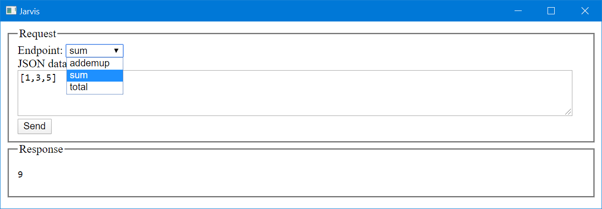

Jarvis
| Repository | https://github.com/dyalog/Jarvis |
| Copyright | Made with Material for MkDocs. Contents copyright ©2015-2024 Dyalog, LTD |
Overview
Note
This documentation continues to be a work in progress. General usage and settings references are complete. Frequent updates will be forthcoming as additional sections are completed.
Jarvis is an HTTP server that makes it easy to create a web service to provide access to your APL code from the web or a local network.
Any client program written in any language on any platform that can process HTTP requests can access a Jarvis-based web service. This vastly increases the potential audience for your application - the client can be a standard web browser, a phone app, a browser-based app, or a custom client written in a language like Python or C# and yes, even APL.
Introduction
The name Jarvis is a pseudo-acronym for JSON and REST Service ("vice" becomes "vis") and was also inspired by J.A.R.V.I.S. (Just A Rather Very Intelligent System) from the Marvel Cinematic Universe.
Formatting Note: You may notice that the name "Jarvis" is formatted in two, possibly three, different ways:
- Jarvis refers Jarvis as an abstract idea
Jarvisrefers to the Dyalog APL Jarvis class- Jarvis (unadorned) is probably the author's mistake for not having formatted the occurrence as one of the above.
Design Goals
Jarvis is designed to make it very easy for an APLer to create web services without requiring in-depth knowledge of web service frameworks. In designing Jarvis we've attempted to
- Make Jarvis' default behavior simple and applicable to many use cases
- Make few assumptions about what the user actually needs to do
- Provide hooks to allow the user to tailor or extend Jarvis' behavior if needed
Create an APL Web Service in 5 Minutes
If you know how to write a monadic, result-returning APL function, you're ready to run your first Jarvis-based web service. Here's how:
-
If you already have a copy of the
Jarvisclass, skip to step 3. Otherwise, load theHttpCommandutility so that we can download a copy of Jarvis and also useHttpCommandfor testing our web service.]load HttpCommand -
Next, download a copy of Jarvis. Note, the following statement downloads the latest, perhaps pre-release, version of the Jarvis class for this quick demonstration. For a production environment, you should use a released version of Jarvis.
HttpCommand.Fixboth downloads and runs⎕FIXon an APL code file from the web.HttpCommand.Fix 'https://raw.githubusercontent.com/Dyalog/Jarvis/master/Source/Jarvis.dyalog' -
Write one or more monadic, result-returning APL functions. For instance:
)cs # sum ← {+/⍵} ⍝ dfns work total ← +/ ⍝ derived functions work ⎕FX '∇r←addemup a' 'r←+/a' '∇' ⍝ and of course, tradfns work -
Next, create an instance of
JarvisusingJarvis.New.j←Jarvis.New ''This will create a
Jarvisinstance with all settings set to their default values. By default,Jarviswill use port 8080 and look for your endpoint code in#. -
You can now run your web service running on port 8080 and serving code from the # (root) namespace.
(rc msg)←j.Start 2024-09-06 @ 15.46.24.199 - Starting Jarvis 1.18.1 2024-09-06 @ 15.46.24.217 - Conga copied from C:\Program Files\Dyalog\Dyalog APL-64 19.0 Unicode/ws/conga 2024-09-06 @ 15.46.24.221 - Local Conga v3.5 reference is #.Jarvis.[LIB] 2024-09-06 @ 15.46.24.231 - Jarvis starting in "JSON" mode on port 8080 2024-09-06 @ 15.46.24.232 - Serving code in # 2024-09-06 @ 15.46.24.237 - Click http://192.168.001.123:8080 to access web interface
If the server started successfully, you'll see messages similar to those above displayed to the APL session and the return code rc should be 0 and msg should be empty. If there was any problem starting Jarvis, rc will be non-0 and msg will contain a (hopefully) helpful message about the problem that occurred.
Now, let's test our service using Jarvis' built-in HTML interface. You could click on the link displayed or open your favorite browser to http://localhost:8080, but just for fun, we'll use Dyalog's HTMLRenderer object.
'h' ⎕WC 'HTMLRenderer' ('URL' 'localhost:8080')

We select the Endpoint (APL function) we want from the drop down list, enter some valid JSON data ([1,3,5]), and press Send to send the request to Jarvis. Jarvis' response is then sent back and displayed.
We can also use HttpCommand to call the web service.
(url data headers)←'localhost:8080/total' '[1,3,5]' ('content-type' 'application/json')
(HttpCommand.Do 'POST' url data headers).Data
9
We can use the cURL command to call the web service.
C:\> curl -H "content-type: application/json" -X POST -d [1,3,5] http://localhost:8080/addemup
9
To stop the service, simply type j.Stop
Interested? Read on...
Usage
Conceptual Overview
Jarvis is implemented as a Dyalog APL class. It's okay if you're not familiar with the object oriented features of Dyalog. All you really need to understand is that a Jarvis server is an "instance" of the Jarvis class. You create an instance of the class and then configure and run the instance. This is covered in Using Jarvis.
Terminology
Jarvis supports two different "paradigms" which define how the client will interact witht the Jarvis service. This section defines some terms that we will use in the discussion below about Jarvis paradigms.
Client
This is the component sending a request to the Jarvis service and receiving Jarvis' response. The client can be anything that can send HTTP requests and receive HTTP responses. It could be a web browser, a program, an app on a mobile phone, another server, and so on.
URL (or URI)
The URL (Universal Resource Locator) or URI (Universal Resource Identifier) is the address, possibly including query parameters, which is sent to Jarvis. A URL has the general format:
[scheme://][userinfo@]host[:port][/path][?query]
scheme is either http or https.userinfo@ is HTTP Basic authentication user credentials if authentication is being used.host is the Jarvis server domain name or IP address.port is the optional port number. It defaults to 80 for http or 443 for https.path is the endpoint for the request.query are the query parameters, if any, for the request.
HTTP method
The HTTP protocol defines several request "methods" that a client may use to request the server to perform different operations. When you open a web browser on a URL, the browser is typically using the GET HTTP method to retrieve the requested content. Other HTTP methods include POST, PUT, DELETE, PATCH, and HEAD; each one designed to indicate the operation the server should perform.
JSON
JSON stands for JavaScript Object Notation and is a flexible notation for representing data arrays and objects. Dyalog APL has a system function, ⎕JSON, which easily converts between JSON and APL arrays/namespaces.
REST
REST stands for REpresentational State Transfer and is a design pattern for APIs. An API that follows this design pattern is termed "RESTful". When a RESTful API is called, the server will transfer to the client a representation of the state of the requested resource.
Paradigms
Jarvis supports two operational paradigms that we term JSON and REST. A Jarvis server can run only one paradigm at a time. One of the first decisions you'll need to make when using Jarvis is which web service paradigm to use. The paradigm will determine protocol for how a client will interact with Jarvis. This section provides information to help you decide which paradigm is most appropriate for your application.
The JSON paradigm
The JSON paradigm may seem quite natural to the APLer in that the endpoints (functions) take a data argument and return a data result. The argument and result can be as complex as you like, provided that they can be represented using JSON.
- The endpoints are the names of APL functions that are called to satisfy the request. You can specify which functions you want to expose as endpoints for your service to the client.
- The client uses the HTTP POST method and passes the parameters for the request as JSON in the request body.
- The payload (body) of the request is automatically converted by Jarvis from JSON to an APL array and passed as the right argument to your function.
- Your function should return an APL array which Jarvis then converts to JSON and returns to the client in the response.
- Your application needs to know nothing about JSON, HTTP or web services.
The REST paradigm
RESTful web services use standard HTTP methods to perform operations on resources. A resource (endpoint) is the path in the request's URL. The resource could be a physical resource like a file or a virtual resource that is constructed dynamically by your code. There are several other "RESTful design" principles or constraints, but they are beyond the scope of this document.
- Operations are typically implemented corresponding to standard HTTP methods:
- GET – read a resource
- POST – create a resource
- PUT – update/replace a resource
- PATCH – update/modify a resource
- DELETE – delete a resource
- With Jarvis, you specify which methods you want your service to support.
- You then implement an APL function with the same name as each method.
- Resources are specified in the
pathof the request URL. - Depending on how you design the service API, parameters, if any, can be passed in the URL, the query string, the body of the request, or some combination thereof.
- The function you write is passed the request object and it's up to you to parse the URL, payload, headers, and query parameters to determine what to do and what the arguments are.
- You decide on the content type and format of the payload of the response. Common response content types for RESTful web services are JSON, XML or HTML.
- In general, the JSON paradigm is quicker and easier to implement, but a properly implemented REST paradigm
JSON contrasted with REST
In many cases, the same functionality can be implemented using either paradigm.
With JSON, endpoints are the names of APL functions that you want to expose with your web service. You write one APL function per operation you want to perform.
With REST, endpoints identify resources and the HTTP method determines the operation to perform on the resource. You write one APL function for each HTTP method your web service will support.
To compare the two paradigms, let's imagine you want to retrieve the total of invoice 45 for customer 231.
JSON Example
One way to implement this using the JSON paradigm might be to:
- specify that the client should provide the arguments as a JSON object with a "customer" element and an "invoicenum" element. For this example, it might look like
- write an APL function called
GetInvoiceTotalwhich would take a namespace as its argument. The namespace will contain elements named "customer" and "invoice"∇ namespace← GetInvoiceTotal namespace;costs [1] ⍝ the namespace argument was created by Jarvis from the JSON object in the request [2] costs←namespace.customer GetInvoiceItems namespace.invoice ⍝ retrieve the invoice item costs pseudo-code [3] namespace.total←+/costs ⍝ insert a total element into the namespace ∇ - Jarvis will then convert the result, in this case the updated namespace, to JSON
{"customer":231,"invoicenum":45,"total":654.32}and return it to the client
REST Example
Using the REST paradigm, you might specify a resource like /customer/231/invoice/45/total. Since this is a "read" operation, you would use the HTTP GET method to retrieve it.
- You would write a function named GET (the same as the HTTP method) which would be passed the HTTP request object. The Endpoint element of the request object will be '/customer/231/invoice/45/total'.
- Your function would need to parse the endpoint to determine what is being requested and then retrieve the information.
- Your function would set the content-type for the response payload as well as format the retrieved information and assign it to the payload.
Using Jarvis
Best Practices
For all but the simplest of Jarvis-based services, we recommend:
- Store the code that implements your endpoints in text files which Jarvis will load upon startup. Set the
CodeLocationconfiguration setting to the folder name that contains the text files. - Use a Jarvis configuration file to specify all non-default configuration settings.
Core Usage Pattern
There are four basic steps to running a Jarvis service.
- Write the APL code which implements the endpoints of your service.
- Create an instance of the
Jarvisclass. - Configure the instance.
- Run the instance.
Everything else - from running the service locally to deploying it as a secure, cloud-hosted, load-balanced service is built on upon these four steps.
Write the APL code that implements the endpoints
The Jarvis paradigm you choose (JSON or REST) will determine how to write your endpoints.
- JSON - you will write an APL function to implement each endpoint. The function name is the endpoint name. See the JSON Paradigm section for more information.
- REST - you will write an APL function for each HTTP method your service will support. The function name is the same as the HTTP method name. See the REST Paradigm section for more information.
Create an instance of the Jarvis class
While you can use the ⎕NEW system function to create an instance of Jarvis, the recommended technique is to use Jarvis.New.
j←Jarvis.New args
args can be one of:
''- create the instance using the default settings. Any non-default settings that you plan to use will need to be set before starting the instance.'path-to-a-Jarvis-config-file'- create the instance using the settings specified in a Jarvis config file. A Jarvis config file is a JSON (or JSON5) file that contains Jarvis configuration settings.namespace-reference- create the instance using the named settings contained in a namespace. The namespace can contain only variables with names of Jarvis configuration settings.- A positional vector of up to 4 elements containing
Port CodeLocation 'Paradigm' 'JarvisConfig'. You do not need to provide all parameters - only those up to the last parameter you need to use. For instance, if you need to specify'REST'as the paradigm, you'll also need to supplyPortandCodeLocation.
Note that you can always set additional configuration settings after creating the instance with any of the above methods (but before running the instance).
Assuming that the file /JarvisConfig.json contains:
{"Port":80, "CodeLocation":"/myJarvisApp/", "Paradigm":"REST"}
and
namespace←⎕JSON ⊃⎕NGET '/JarvisConfig.json'
the following are equivalent.
j←Jarvis.New '' ⋄ j.(Port CodeLocation Paradigm)←80 '/myJarvisApp' 'REST'
j←Jarvis.New '/JarvisConfig.json'
j←Jarvis.New namespace
j←Jarvis.New 80 '/myJarvisApp/' 'REST'
CodeLocation
CodeLocation specifies where Jarvis should look for the code that implements your endpoints. It can be
- a reference to, or the name of, a namespace in the workspace. For example, either
#.MyAppand'#.MyApp'will work if your application code is in the namespace#.MyApp. - a character vector representing the path to the folder that contains your application code. If the path is relative, Jarvis attempts to determine the root folder from which to the path is relative to what it's relative to as follows:
- If Jarvis is running in a saved workspace, it uses the folder where the workspace is located.
- Otherwise, if you have specified a Jarvis config file, Jarvis will use the folder where the config file is located.
- Otherwise, if Jarvis can determine the path for its source file, it will use that.
- Finally, it will default to the current folder for your Dyalog session as determined by
(1 ⎕NPARTS ''). Using a relative path can be useful for making your Jarvis service more portable, but it's important to make sure to understand the process above. For instance, if you have been running Jarvis from aCLEAR WSby dynamically loading it and then you save your application to a named workspace, Jarvis could wind up looking in a potentially different folder if the workspace is stored elsewhere than the Jarvis config file.
Configure the Jarvis instance
Having created a Jarvis instance, you can set any configuration parameter prior to starting the instance. This includes being able to override parameters that may have been loaded from a Jarvis config file. Details about each of the parameters can be found in Settings.
Run the Jarvis instance
Use j.Start to start the Jarvis instance. Use j.Stop to stop Jarvis. You can run j.Start again to restart Jarvis.
JSON Paradigm
Jarvis's JSON paradigm was developed to make it easy to expose the functionality of your APL application as a web service. The endpoints of your service are simply APL functions that take an array as a right argument and return an error as a result.
How Jarvis's JSON mode works
You write an APL function for each endpoint of your service
Each endpoint function should at a minimum take an APL array as a right argument and return an APL array as its result. The name of the endpoint is the name of your function - so, it's best to not use characters in your endpoint function names that aren't easily supported in URLs. Your functions should reside in the namespace specified by [`CodeLocation]
The client sends a request
It doesn't matter what the client is - it could be a browser, an app on a phone, Dyalog's HttpCommand, curl, or any program capable of sending and receiving HTTP messages. To call one of your service's endpoints, the client's request should:
- Specify the
- Use the HTTP POST method in order to send the request payload.
- Include a
content-type: application/jsonheader in the request's headers. - Format its payload as JSON.
Example
curl -H "content-type: application/json" -X POST -d [1,3,5] http://localhost:8080/sum
Advanced Usage
- The
AllowGETssetting will enable HTTP GET method to be used as well - by defaultAllowGETsis disabled. - The
AllowFormDatasetting will enableJarvisto receive payloads that usecontent-type: multipart/form-data- by defaultAllowFormDatais disabled.
Jarvis receives the request
When Jarvis receives the request, it verifies that the request is well-formed. If there is a problem parsing the request, Jarvis will respond to the client with a 400-series HTTP status code and message. Assuming the request is well-formed, Jarvis will convert the request's JSON payload to an APL array using ⎕JSON.
Jarvis calls your endpoint function
Jarvis passes the APL array as the right argument to your endpoint function. If your function is dyadic or ambivalent, Jarvis will pass the HttpRequest object as the left argument. Your function should return an APL array result.
Advanced Usage
Jarvis has a few specific places where you can "inject" your own APL code to perform actions like additional request validation, authentication, and so on. Two such places are available after Jarvis receives the request, but before calling your endpoint function. These are:
ValidateRequestFnspecifies the name of a function to call for every request thatJarvisreceives.AuthenticateFnspecifies the name of a function to call to perform authentication.
Jarvis sends the response to the client
Jarvis will convert the APL array result into JSON format using ⎕JSON⍠'HighRank' 'Split' and send the JSON back to the client as the payload of the response.
REST Paradigm
Jarvis's REST paradigm was developed to make it possible to deploy your APL application using a REST API. REST APIs are more applicable when managing a collection of resources. HTTP-based REST web services, like Jarvis, use standard HTTP methods (GET, POST, PUT, DELETE, etc) to create, retrieve, and manipulate resources.
There are six guiding principles of REST. The degree to which you adhere to these principles is completely up to you.
How Jarvis's REST mode works
You write an APL function for each HTTP method your service will support
Rather than writing a function for each endpoint as in the JSON paradigm, you will write a monadic function for each of the HTTP methods that your web service will support. Your functions should reside in the namespace specified by CodeLocation.
You specify which HTTP methods your REST service will support using the RESTMethods setting. For instance, setting RESTMethods←'Get' indicates that your service will support only HTTP GET requests. Such requests will call the #.CodeLocation.Get function, passing the HTTP request as its right argument. For the purposes of this document, we'll call the request right argument Request.
Your Get function would then look at the resource being requested by parsing Request.Endpoint element. If DefaultContentType is set to 'application/json' (the default), your function can return an APL array which Jarvis will convert to JSON. If you are not using 'application/json', then you will need to:
- use
Request.SetContentTypeto set an appropriate content type - set the
Request.Response.Payloadto the content you want to send back to the client
The client sends a request
It doesn't matter what the client is - it could be a browser, an app on a phone, Dyalog's HttpCommand, curl, or any program capable of sending and receiving HTTP messages. To interact with a resource, the client should:
- Specify the resource in the request URL
- Specify the HTTP method appropriate to the operation being requested
- If the request includes a payload, specify an appropriate
content-typeheader
Example
To retrieve a hypothetical list of orders for customer with id 123, one might make a request like:
resp←HttpCommand.Get 'http://localhost:8080/customers/123/orders'
Jarvis receives the request
When Jarvis receives the request, it verifies that the request is well-formed. If there is a problem parsing the request, Jarvis will respond to the client with a 400-series HTTP status code and message.
Jarvis calls your method function
Jarvis passes the Request object as the right argument to the function appropriate for the HTTP method being used. It is up to your function to parse Request.Endpoint to determine the resource being requested. As noted above, if the response payload's content-type is 'application/json' your function can return an APL array which Jarvis will automatically convert to JSON. Otherwise, your function is responsible for setting the Request.Response.Payload and Request.ContentType appropriately.
If the requested resource is not found, or some other issue occurs, your function should fail the request with an appropriate HTTP status code using Request.Fail. For example, an HTTP status code of 404 means that the requested resource was not found and you would use Request.Fail 404 to set the status code.
Advanced Usage
Jarvis has a few specific places where you can "inject" your own APL code to perform actions like additional request validation, authentication, and so on. Two such places are available after Jarvis receives the request, but before calling your function. These are:
ValidateRequestFnspecifies the name of a function to call for every request thatJarvisreceives.AuthenticateFnspecified the name of a function to call to perform authentication.
Jarvis sends the response to the client
Jarvis will format a proper HTTP response and send it to the client.
Using the Request Object
A Request object is created for every HTTP request that Jarvis receives. It contains information about the request - HTTP headers, HTTP cookies, the client's IP address, certificate information (if you're using HTTPS), etc. It also contains the Response namespace which will have the information to format Jarvis' response.
Request is also passed as an argument to several of the "hook" functions.
Simple Authentication Example
If your Jarvis service used HTTP Basic, Jarvis will populate the Userid and Password fields with the credentials supplied in the request. In this example we'll use a somewhat nonsensical validation of checking if the Password is the reverse of the Userid
∇ rc←Authenticate req
[1] ⍝ Perform simple silly HTTP Basic authentication example
[2] ⍝ check that:
[3] ⍝ there is a UserID
[4] ⍝ the Password is the reverse of UserID
[5] ⍝ req - the request object
[6] ⍝ rc - 0 if authentication passes, 1 otherwise
[7] →0⍴⍨rc←0∊⍴req.UserID ⍝ fail if UserID is empty
[8] rc←req.UserID≢⌽req.Password ⍝ fail if UserID is not the reverse of Password
∇
Authenticate←{0∊⍴⍵.UserID:1 ⋄ ⍵.UserID≢⌽⍵.Password}
Manipulating the Request's Response
Jarvis will assume that all responses are of the content-type specified by DefaultContentType which has a default setting of 'application/json; charset=utf-8'. You can specify a different DefaultContentType if most or all of your endpoints return response payloads other than JSON. You can also set the content-type in your endpoint code by using the request's SetContentType method. For example:
∇ r←req ReturnHTML string
[1] ⍝ Simple example of manipulating the payload
[2] req.SetContentType'text/html; charset=utf-8'
[3] r←'<h1>',string,'</h1>'
∇
Reference
Settings
The settings documentation is broken up into groups of related settings as follows.
| Group | Description |
|---|---|
| Operational | Settings related to the operation of the Jarvis server. Examples include CodeLocation, JarvisConfig and Paradigm. |
| Conga | Settings specific to Conga, Dyalog's TCP/IP framework. |
| JSON Mode | Settings specific to running a Jarvis service in JSON mode. |
| REST Mode | Settings specific to running a Jarvis service in REST mode. |
| Session | Settings related to using sessions with Jarvis to maintain server-side state. |
| User Hooks | Settings that allow you to specify "hook" functions to perform tasks like application initialization, session initialization, and authentication. |
| Container | Settings related to running a Jarvis service in a containerized environment like Docker. |
| CORS | Settings related to Cross Origin Resource Sharing which can enable calls to your Jarvis service to be made from webpages in other domains. |
| SSE | Settings related to Server-Sent Events, which let Jarvis push a stream of events to clients. |
| WebSockets | Settings related to WebSockets, which give Jarvis a two-way, persistent connection to a client. |
| Shared | Settings that are shared by all instances of Jarvis. |
Operational Settings
CodeLocation
| Description | Prior to starting a Jarvis instance, CodeLocation specifies where Jarvis will look for your endpoint code. CodeLocation can be any of:
CodeLocation is set to a reference to the namespace containing your endpoint code. |
| Default | '#' |
| Examples | j.CodeLocation←#.myEndpoints ⍝ reference to namespace j.CodeLocation←'#.myEndpoints' ⍝ name of namespacej.Codelocation←'/home/me/myEndpoints' ⍝ folderj.CodeLocation←'/home/me/myEndpoints.apln' ⍝ file containing namespace definition |
| Notes | If the environment variable DYALOG_JARVIS_CODELOCATION exists, it will override any other setting for CodeLocation. |
ConnectionTimeout
| Description | ConnectionTimeout specifies the the amount of time in seconds that a connection may be idle before being closed. Jarvis will not close a connection that is currently being serviced by a long-running endpoint. |
| Default | 30 |
| Examples | j.ConnectionTimeout←120 ⍝ 2 minute timeout |
| Notes | ConnectionTimeout is used by Jarvis's "housekeeping" to prevent inactive connections from accumulating. |
Debug
| Description | Setting Debug to a non-zero value will enable various types of debugging and reporting to take place. The valid values for Debug are:
Debug values are additive. For example 9 (1+8) would stop on any error as well as enable Conga event reporting. |
| Default | 0 |
| Examples | j.Debug←2 ⍝ stop just before executing any user code |
| Notes | While it is possible to set Debug to ¯1 to enable all forms of debugging, be mindful that additional values for Debug may be added in the future and this could lead to unintended behavior. |
DefaultContentType
| Description | DefaultContentType specifies the HTTP content-type for Jarvis's response if no content-type header has been specified by the user's endpoint code. |
| Default | 'application/json; charset=utf-8' |
| Examples | j.DefaultContentType←'application/xml; charset=utf-8' |
| Notes | DefaultContentType should only be set when most of the responses from your endpoints will have a content-type other than 'application/json'. For individual responses that use a different content-type, set request.ContentType. |
ErrorInfoLevel
| Description | ErrorInfoLevel specifies how much information to include in the HTTP status message when an untrapped error occurs and Jarvis returns an HTTP status code of 500. Valid settings are:
|
| Default | 1 |
| Examples | j.ErrorInfoLevel←2 ⍝ include function name and line number |
ExcludeFns
| Description | ExcludeFns hides functions in CodeLocation from being called as endpoints: an endpoint request for a function whose name matches one of its patterns gets a 404 (Not Found). The pattern forms are the same as for IncludeFns:
ExcludeFns may be a single character vector or a vector of character vectors. |
| Default | '' - no functions are hidden |
| Examples | j.ExcludeFns←'internal*'j.ExcludeFns←'debugDump' 'reset' |
| Notes | If both IncludeFns and ExcludeFns are set, a function must match IncludeFns and not match ExcludeFns to be callable. Hook functions and SSE endpoint functions are excluded from being called as ordinary endpoints regardless of this setting. |
Hostname
| Description | Hostname is the name of the host that Jarvis will insert into the "host" header of the response. If a response payload from Jarvis needs to include URLs pointing to other endpoints within the service, Hostname can be used to construct those URLS. |
| Default | '' which means that Jarvis will use the result of 2 ⎕NQ # 'TCPGetHostID' (the IP address of the server on the local network) |
| Examples | j.Hostname←'www.myJarvis.com' |
| Notes | 2 ⎕NQ # 'TCPGetHostID' returns the IP address on the local network, which isn't of much use if the client is accessing Jarvis from an external network. Hostame exists to address this problem by providing an external address to Jarvis. |
HTTPAuthentication
| Description | HTTPAuthentication indicates the HTTP authentication scheme that will be used to authenticate requests. Currently only HTTP Basic authentication is supported. Valid settings are:
|
| Default | 'basic' |
| Examples | j.HTTPAuthentication←'' ⍝ disable HTTP basic authentication |
| Notes | See HTTP Basic Authentication |
IncludeFns
| Description | IncludeFns restricts which functions in CodeLocation may be called as endpoints. When it is non-empty, only functions whose names match one of its patterns are callable; any other endpoint request gets a 404 (Not Found). Each element may be:
IncludeFns may be a single character vector or a vector of character vectors. |
| Default | '' - no restriction; every function in CodeLocation (except those excluded below) may be called |
| Examples | j.IncludeFns←'getCustomer' 'listCustomers'j.IncludeFns←'get*' |
| Notes | If both IncludeFns and ExcludeFns are set, a function must match IncludeFns and not match ExcludeFns to be callable. Hook functions and SSE endpoint functions are always excluded from being called as ordinary endpoints, regardless of IncludeFns. The same check is applied in JSON and REST modes and by the built-in WebSocket handler. |
JarvisConfig
| Description | JarvisConfig is the name of the JSON (or JSON5) file, if any, that contains your Jarvis configuration. |
| Default | '' |
| Examples | j.JarvisConfig←'/home/myapp/jarvisconfig.json |
| Notes | If you specify a relative path to the Jarvis configuration file, Jarvis will consider it to be relative to the current working directory as returned by 1 ⎕NPARTS '' |
LoadableFiles
| Description | If CodeLocation specifies a folder from which to load your endpoints' code, LoadableFiles specifies a comma-delimited set of patterns to match when selecting files to load into workspace. |
| Default | '*.apl?,*.dyalog' |
| Examples | j.LoadableFiles←'*.apln,*.aplf,*.aplc' |
| Notes | Dyalog has evolved its "code in files" methodology. In its early days, the .dyalog extension was used almost exclusively. Over time, and with the advent of Link, the common practice is to the use of file extension to indicate the particular type of APL object contained within the file - .aplf for a function, .apln for a namespace, .aplc for a class, and .apla for an array. |
Logging
| Description | Logging is a Boolean setting that determines whether Jarvis will display certain internal log messages to the session. |
| Default | 1 |
| Examples | j←Jarvis.New ''j.Start ⍝ default is Logging←12024-12-06 @ 11.34.23.890 - Starting Jarvis 1.18.42024-12-06 @ 11.34.23.913 - Conga copied from C:\Program Files\Dyalog\Dyalog APL-64 19.0 Unicode/ws/conga2024-12-06 @ 11.34.23.915 - Local Conga v3.5 reference is #.Jarvis.[LIB]2024-12-06 @ 11.34.23.923 - Jarvis starting in "JSON" mode on port 80802024-12-06 @ 11.34.23.927 - Serving code in #2024-12-06 @ 11.34.23.931 - Click http://192.168.223.134:8080 to access web interface0 Server startedj.Stop2024-12-06 @ 11.34.35.564 - Stopping server...0 Server stoppedj.Logging←0 ⍝ turn off loggingj.Start0 Server started |
| Notes | The messages controlled by Logging are internal, operational, messages.Request and HTTP logging capabilities will be available in a forthcoming Jarvis release. |
Paradigm
| Description | Paradigm specifies the mode in which Jarvis will operate. Current valid values are:
|
| Default | 'JSON |
| Examples | j.Paradigm←'REST' |
| Notes | You should set Paradigm before starting your Jarvis instance. |
UseZip
| Description | UseZip is a Boolean that tells Jarvis whether to send a compressed response payload if the client will accept it as indicated by the "accept-encoding" header in the client request. Valid values are:
|
| Default | 0 |
| Examples | j.UseZip←1 |
| Notes | At present only "gzip" and "deflate" content-encodings are supported. ZipLevel controls the level of compression employed. |
ZipLevel
| Description | ZipLevel is an integer value between 0 and 9 and specifies the level of compression to use when Jarvis compresses the response payload (see UseZip). Higher values result in a higher degree of compression albeit at the cost of performance. |
| Default | 3 which seems to provide the best trade-off of compression versus speed. |
| Examples | j.ZipLevel←6 |
Session Settings
A stateless web service means that each request from a client to the server is treated as an independent transaction that is unrelated to any previous request. In other words, the server does not store any information about the state of the client between requests. There are many good reasons for implementing a stateless web service including improved scalability, reliability, and independence. However, in some cases it may make sense to maintain some state on the server. Jarvis's sessions are intended to allow you to maintain state in the server.
See Using Sessions for more information.
SessionTimeout
| Description | SessionTimeout controls whether Jarvis will use sessions. It also specifies how long before a session will time out and be removed. Valid settings are:
|
| Default | 0 - do not use sessions |
| Examples | j.SessionTimeout←10 ⍝ timeout after 10 minutes of inactivity |
SessionIdHeader
| Description | SessionIdHeader is the name of the HTTP header or HTTP cookie that will contain the session identifier. Every sessioned request must include this session ID in order to access the session state information on the server. |
| Default | 'Jarvis-SessionID' |
| Examples | j.SessionIdHeader←'gandalf' |
SessionUseCookie
| Description | SessionUseCookie controls whether the session id is sent using an HTTP header or an HTTP cookie. In either case, the header or the cookie name will be specified by SessionIdHeader. Valid settings are:
|
| Default | 0 |
| Examples | j.SessionUseCookie←1 ⍝ use a cookie for the session id |
| Notes | Using an HTTP cookie can be more convenient, especially if the client is a browser. When Jarvis creates session it will send the cookie in its response and then the browser will automatically include the cookie in every subsequent request. |
SessionPollingTime
| Description | SessionPollingTime controls how often, in minutes, Jarvis polls for timed-out sessions. |
| Default | 1 |
| Examples | j.SessionPollingTime←5 |
| Notes | When using sessions, Jarvis starts a session monitor in a separate thread. The session monitor loops continuously checking for timed-out sessions. SessionPollingTime controls the time between each loop. |
SessionCleanupTime
| Description | SessionCleanupTime controls how often, in minutes, Jarvis purges remaining information about timed-out sessions. |
| Default | 60 |
| Examples | j.(SessionCleanupTime←SessionTimeout) ⍝ set to not retain any information after a session times out |
| Notes | When a session times out, Jarvis erases the namespace associated with the session, but leaves information about the session having existed. SessionCleanupTime determines when that remaining information is removed. The intent was to give you the opportunity to inform the client that their session timed out if they send a request after the session has timed out, but before the remaining information is expunged. |
JSON Settings
These settings apply when using Jarvis's JSON paradigm.
AllowFormData
| Description | AllowFormData controls whether Jarvis will accept requests with a content-type of 'multipart/form-data'. This makes it more convenient when using a form in a web browser as the client or to upload a file. Valid settings are:
|
| Default | 0 |
| Examples | j.AllowFormData←1 ⍝ enable multipart/form-data content |
AllowGETs
| Description | AllowGETs controls whether Jarvis will accept HTTP GET requests to call endpoints. Normally, Jarvis will accept only HTTP POST requests to access an endpoint, but there may be cases when it's convenient to all simple requests using HTTP GET. Valid settings are:
|
| Default | 0 |
| Examples | j.AllowGETs←1 ⍝ accept GET requests |
| Notes | Parameters to the endpoint being called should be specified using URL-encoded properly formatted JSON in the URL query string. For instance, if you have a sum←+/ endpoint and you want to sum the array [1,2,3], you would need to use the endpoint and query string /sum?%5B1%2C2%2C3%5D (which is URL-encoded /sum?[1,2,3]). |
HTMLInterface
| Description | HTMLInterface controls whether and how Jarvis will provide an HTML interface. Valid settings are:
|
| Default | 1 if using JSON mode, 0 otherwise |
| Examples | j.HTMLInterface←'/myjarvis/web/' ⍝ HTML content is in the folder /myjarvis/web/ |
JSONInputFormat
| Description | JSONInputFormat controls the format of the request's JSON payload when converted to APL. Valid settings are:
'Format' option for ⎕JSON. |
| Default | D |
| Examples | j.JSONInputFormat←'M' ⍝ use the matrix inport format for ⎕JSON |
| Notes | JSONInputFormat also has effect when using Jarviss REST paradigm if [ParsePayload](./settings-rest.md#parsepayload) is set to1`. |
Report404InHTML
| Description | When a requested endpoint is not found, Jarvis will always respond by setting the response HTTP status code to 404 and HTTP status message to 'Not Found'. Report404InHTML controls whether Jarvis will also return a simple "not found" HTML page in its response payload. This is potentially useful when the client is a web browser. Valid settings are:
|
| Default | 1 |
| Examples | j.Report404←0 ⍝ disable sending the "not found" HTML page |
| Notes | Report404InHTML has effect only if the HTMLInterface is enabled. |
REST Settings
These settings apply when using Jarvis's REST paradigm.
ParsePayload
| Description | ParsePayload controls whether Jarvis automatically convert JSON and XML request payload to an APL format using either ⎕JSON or ⎕XML as appropriate.Valid settings are:
|
| Default | 1 - parse JSON and XML payloads |
| Examples | j.ParsePayload←0 ⍝ do not parse JSON and XML payloads |
| Notes | The format for parsed JSON payloads is controlled by JSONInputFormat. |
RESTFailProcessing
| Description | RESTFailProcessing controls whether Jarvis applies its normal response processing to a failed REST request — one whose response status is not in the 2xx (success) range. That processing is: setting the response content-type to DefaultContentType if the handler didn't set one, and converting the response payload to JSON when the content-type is application/json. Valid settings are:
|
| Default | 0 |
| Examples | j.RESTFailProcessing←1 ⍝ format error responses like successful ones |
| Notes | Successful (2xx) responses are always processed; this setting affects only error responses. PostProcessFn runs before this step regardless of the setting. This setting applies only in the REST paradigm. |
RESTMethods
| Description | RESTMethods specifies which HTTP methods will be supported by your REST web service. It is a comma-delimited character vector of HTTP method names and optionally, the name of the APL function that will service that HTTP method. Each comma-delimited segment consists of a case-insensitive HTTP method name ('get' 'GET' 'gEt' will all match GET). The method name can be optionally followed by a '/' and the function name which implements the handler for that HTTP method. If no function name is supplied, the function name will be the case-sensitive HTTP method. |
| Default | 'Get,Post,Put,Delete,Patch,Options' |
| Examples | j.RESTMethods←'Get,post/handlePOST'In this example our service will accept HTTP GET and POST requests.
|
| Notes | Jarvis does not place a restriction on the HTTP method names, meaning that you could potentially invent your own "HTTP" methods.j.RESTMethods←'Get,Bloofo' ⍝ allow GET and BLOOFO. |
User Hooks Settings
"Hook" functions are functions you write to inject custom behavior at specific points in Jarvis's execution. You then assign the name of the function to the appropriate "hook". Hook functions can be located in #.CodeLocation - Jarvis will exclude them from being considered as endpoint functions. By default, no hook functions are defined; you need to define only the hook functions, if any, that are needed for your web service.
AppCloseFn
| Description | AppCloseFn is the name of the niladic, function to be called when Jarvis is stopped. This function could do things like closing database connections, managing log files, etc. The function may return a 2-element array of (rc msg) where rc is an integer return code (0 means "okay") and msg is a character vector message. If the function does not return a result, the Jarvis will return the return code and message that was set prior to calling AppCloseFn. |
| Default | '' |
| Examples | j.AppCloseFn←'ShutDown' |
AppInitFn
| Description | AppInitFn is the name of the monadic, result-returning function to be called when Jarvis is started. This function is called before Jarvis starts listening for requests. This function could do things like establishing database connections or other application initialization. The function should return a 2-element array of (rc msg) where rc is an integer return code (0 means "okay") and msg is a character vector message. If the function is monadic, its right argument is a reference to the Jarvis instance. |
| Default | '' |
| Examples | j.AppInitFn←'Startup' |
| Notes | If your function returns a non-0 return code, Jarvis will exit. |
AuthenticateFn
| Description | AuthenticateFn is the name of monadic, result-returning function to be called when you need to authenticate a request. The right argument to the function is the Request instance. The function result should either be:
|
| Default | '' |
| Examples | j.AuthenticateFn←'Authenticate' |
| Notes | See Authentication for more information about how to authenticate an HTTP request. |
PostProcessFn
| Description | PostProcessFn is the name of monadic, non-result-returning function to be called after your endpoint has run but before the response is sent to the client. The right argument to the function is the Request instance. The function should not return a result however, if it does, that result is ignored.If you have some treatment that you need to apply to every response, PostProcessFn can be used to avoid having to add that treatment to every endpoint. |
| Default | '' |
| Examples | j.PostProcessFn←'PostProcess'∇ PostProcess req[1] 'custom-header'req.SetHeader'some value' ⍝ add a custom header[2] req.Reponse.Payload.Message←'Have a nice day!' ⍝ modify the payload∇ |
SessionInitFn
| Description | SessionInitFn is the name of a monadic, result-returning function that can perform session initialization if your web service is using sessions. The right argument is the Request instance, which we'll call req. The reference to the session namespace is req.Session. The integer function result should be either:
|
| Default | '' |
| Examples | j.SessionInitFn←'InitSession |
| Notes | See Using Sessions for more information. |
ValidateRequestFn
| Description | ValidateRequestFn is the name of a monadic, result-returning function that will be called for every request that Jarvis receives. ValidateRequestFn gives you the opportunity to perform additional validation on a request. The right argument is the Request instance. The function result should either be:
|
| Default | '' |
| Examples | j.ValidateRequestFn←'Validate' |
| Notes | See Validation for more information. |
Conga-Related Settings
Jarvis uses Conga for TCP/IP communications. Jarvis's Conga settings are used to configure the Conga's operation. In most cases Jarvis' default Conga-settings are sufficient. See the Conga User Guide for more detailed information on specific settings. See Jarvis and Conga if your application has other components that also use Conga, such as HttpCommand or isolates, or if you are using Conga that is not located in the Dyalog installation folder.
Once started, Jarvis maintains a reference to to Conga library in the shared LDRC setting. This enables you to manage query and/or manage Conga settings directly if you need to. For instance, j.LDRC.Tree '.' will return the entire Conga object tree.
Jarvis has two shared Conga-related settings - CongaPath and CongaRef.
AcceptFrom
| Description | AcceptFrom allows you to limit Jarvis incoming connections to a specific set of IP address ranges. AcceptFrom is either one or two character vectors that specify IPV4 and/or IPV6 address ranges. Each vector is a comma-delimited set of IP ranges. |
| Default | '' |
| Examples | j.AcceptFrom←'192.168.1.1/127,10.17.221.67/75' |
| Notes | This setting is documented as AllowEndPoints in the Conga User Guide. Unlike AllowEndPoints, you do not need to specify 'IPV4' or 'IPV6' as Jarvis can automatically determine which IP version is intended. |
BufferSize
| Description | BufferSize specifies the maximum HTTP headers length that Jarvis will accept. The intent is to block malicious requests that attempt to overwhelm the server by sending huge requests. |
| Default | 10000 |
| Examples | j.BufferSize←5000 ⍝ allow up to 5000 bytes of HTTP header data |
| Notes | BufferSize can be used in conjunction with DOSLimit to mitigate Denial of Service (DOS) attacks. |
DenyFrom
| Description | Similar to AcceptFrom, DenyFrom allows you to deny incoming connections from a specific set of IP address ranges. DenyFrom is either one or two character vectors that specify IPV4 and/or IPV6 address ranges. Each vector is a comma-delimited set of IP ranges. |
| Default | '' |
| Examples | j.DenyFrom←'192.168.1.1/127,10.17.221.67/75' |
| Notes | This setting is documented as DenyEndPoints in the Conga User Guide. Unlike DenyEndPoints, you do not need to specify 'IPV4' or 'IPV6' as Jarvis can automatically determine which IP version is intended. |
DOSLimit
| Description | To reduce possible Denial Of Service (DOS) attacks, DOSLimit is used to limit the size of HTTP payloads that Jarvis will accept. |
| Default | ¯1 which indicates to use the Conga default value of 10485760 |
| Examples | j.DOSLimit←100000 ⍝ assumes no message will exceed 100000 bytes |
| Notes | You should specify a DOSLimit large enough to accept the largest message you anticipate receiving. |
FIFO
| Description | FIFO controls how Conga will process incoming requests. Setting FIFO to 1 will cause Conga to process requests in a "First In, First Out" order. Setting FIFO to 0 will cause Conga to process requests according to Conga's ReadyStrategy setting. |
| Default | 1 |
| Examples | j.FIFO←0 ⍝ turn FIFO mode off |
| Notes | This setting is documented as EnableFifo in the Conga User Guide. |
Port
| Description | Port is port number that Jarvis will listen on. |
| Default | 8080 |
| Examples | j.Port←22361 |
| Notes | Allocating ports below 1024 on Linux typically requires root privileges due to security reasons. |
RootCertDir
| Description | When running Jarvis over HTTPS, RootCertDir is the path to a folder containing public root certificates. |
| Default | '' |
| Examples | Set RootCertDir to the public root certificates folder installed with Dyalog.dir←1 1⊃1 ⎕NPARTS 2 ⎕NQ '.' 'GetCommandLineArgs'j.RootCertDir←dir,'PublicCACerts' |
| Notes | This setting is documented as RootCertDir in the Conga User Guide. See Security for more information. |
Priority
| Description | Priority is the GnuTLS priority string when using secure communications. Priority specifies the TLS session's handshake algorithms when negotiating a secure connection. |
| Default | 'NORMAL:!CTYPE-OPENPGP' |
| Examples | j.Priority←'NORMAL:-MD5' ⍝ use the default without HMAC-MD5 |
| Notes | Setting Priority to something other than the default requires an in-depth understanding of TLS session negotiation. Don't change it unless you know know what you're doing. |
Secure
| Description | Secure is a Boolean setting that controls whether Jarvis will use TLS. Valid settings are:
|
| Default | 0 |
| Examples | j.Secure←1 ⍝ enable secure communications |
| Notes | Using TLS requires configuring several settings, see Using TLS. |
ServerCertSKI
| Description | Under Windows, when using the Microsoft Certificate Store to obtain the server certificate for Jarvis to use, ServerCertSKI is the Server Certificate Subject Key Identifier of the certificate. |
| Default | '' |
| Examples | j.ServerCertSKI←'aca7d8f00691129ea0bc3613a00ed8ea9a5e55f5' |
| Notes | The subject key identifier is a 40 byte hexadecimal string. For more information, see Using TLS. |
ServerCertFile
| Description | ServerCertFile is the name of the file containing the server's public certificate. |
| Default | '' |
| Examples | j.ServerCertFile←'/etc/mycerts/publiccert.pem' |
| Notes | For more information, see Using TLS. |
ServerKeyFile
| Description | ServerKeyFile is the name of the file containing the server's private key. |
| Default | '' |
| Examples | j.ServerKeyFile←'/etc/mycerts/privatekey.pem' |
| Notes | Never share your private key file. For more information, see Using TLS. |
ServerName
| Description | ServerName is the Conga name for the Jarvis server. You can specify the name or have it Conga assign it. |
| Default | Assigned by Conga in the format 'SRVnnnnnnnn' where nnnnnnnn begins at 00000000 and is incremented when a Jarvis server using the same Conga instance is started. |
| Examples | )copy conga Congaj1←Jarvis.New 8080j2←Jarvis.New 8081j3←Jarvis.New 8082j3.ServerName←'MyJarvis'(j1 j2 j3).Start(j1 j2 j3).ServerNameSRV00000000 SRV00000001 MyJarvis |
| Notes | ServerName can be useful when interacting with Conga, particularly when debugging. For example:j3.(LDRC.Describe ServerName)0 MyJarvis Server ListenLDRC is Jarvis's local reference to the Conga library. |
SSLValidation
| Description | SSLValidation is employed as part of the certificate checking process and is more fully documented in the Conga User Guide. |
| Default | 64 - request but do not require a client certificate |
| Examples | j.SSLValidation←128 ⍝ require a valid certificate |
| Notes | For more information, see Using TLS. |
WaitTimeout
| Description | WaitTimeout is the number of milliseconds that Jarvis will wait in its listening loop before timing out. |
| Default | 15000 - 15 seconds |
| Examples | j.WaitTimeout←60000 ⍝ wait a minute before timing out |
| Notes | Conga servers sit in a "wait" loop listening for communications from clients. If no communications occur before WaitTimeout has passed, Conga will signal a "Timeout" event and reiterate the "wait" loop. |
CORS Settings
CORS, or Cross-Origin Resource Sharing, is a security feature implemented by web browsers to control how resources on a web page can be requested from another domain outside the domain from which the resource originated. It helps prevent malicious websites from accessing sensitive data on other websites.
When a web page makes a request to a different domain (cross-origin request), the browser checks if the server allows such requests by looking at the CORS headers in the server's response. If the headers indicate that the request is allowed, the browser permits the resource to be accessed; otherwise, it blocks the request.
CORS is essential for enabling secure communication between different web applications and APIs while protecting users from potential security risks.
Without modification, Jarvis's default CORS settings will allow most CORS requests. For more information about CORS, see CORS.
EnableCORS
| Description | EnableCORS is a Boolean setting which enables or disables CORS support in Jarvis. Valid values are:
|
| Default | 1 |
| Examples | j.EnableCORS←0 ⍝ disable CORS support |
CORS_Origin
| Description | CORS_Origin specifies the domains from which requests are allowed. Valid values are:
|
| Default | '*' - requests from all domains are allowed. |
| Examples | j.CORS_Origin←'https://foo.example' ⍝ allow requests only from https://foo.example |
CORS_Methods
| Description | CORS_Methods controls which HTTP methods that will be allowed in cross-origin requests. Valid values are:
|
| Default | ¯1 |
| Examples | j.CORS_Methods←'GET,POST' |
| Notes | This setting applies only to preflighted requests. You may also directly set the Access-Control-Allow-Methods header, which will override the CORS_Methods setting. |
CORS_Headers
| Description | CORS_Headers controls what additional headers will be allowed in a CORS request. Valid values are:
|
| Default | '*' |
| Examples | j.CORS_Headers←'X-Custom-Header' |
| Notes | By default, only the CORS-safelisted response headers are exposed to the client. This setting applies only to preflighted requests. You may also directly set the Access-Control-Allow-Headers header, which will override the CORS_Headers setting. |
CORS_MaxAge
| Description | CORS_MaxAge indicates, in seconds, how long the results of a preflight request can be cached. |
| Default | 60 |
| Examples | j.CORS_MaxAge←600 ⍝ set to 10 minutes (600 seconds) |
| Notes | This setting applies only to preflighted requests. You may also directly set the Access-Control-Max-Age header, which will override the CORS_MaxAge setting. |
SSE Settings
Server-Sent Events (SSE) let a Jarvis service push a stream of events to a client over an ordinary HTTP connection. The browser's EventSource API reads the stream. SSE works in both JSON and REST modes. By default no SSE endpoints are defined, and Jarvis behaves exactly as it does without SSE support.
See Server-Sent Events for more information about using SSE with Jarvis.
SSEEndpoints
| Description | SSEEndpoints names the endpoints that serve event streams. It can be either:
/. A / within a name is treated as ., so '/a/b' and 'a.b' both name the endpoint /a/b, handled by the function a.b in CodeLocation. Empty and duplicate names are ignored.Each SSE endpoint may have a function of the same name in CodeLocation, but doesn't need one. If there is one, it must be a monadic or ambivalent function, and may return a result or not. Jarvis calls it once for each client after the stream has started. See The endpoint function. |
| Default | '' - no SSE endpoints |
| Examples | j.SSEEndpoints←'events'j.SSEEndpoints←'/events, /alerts'j.SSEEndpoints←'events' 'alerts/high'In a JSON configuration file: "SSEEndpoints": "events, alerts""SSEEndpoints": ["events", "alerts/high"] |
| Notes |
|
SSEHeartbeatInterval
| Description | SSEHeartbeatInterval is the number of seconds between "heartbeats" that Jarvis sends on every open SSE stream. A heartbeat is an SSE comment (a line containing only :), which the browser doesn't pass to the page. Heartbeats do two jobs:
|
| Default | 30 |
| Examples | j.SSEHeartbeatInterval←15 ⍝ every 15 secondsj.SSEHeartbeatInterval←0 ⍝ no heartbeats |
| Notes |
|
WebSocket Settings
WebSockets give a Jarvis application a two-way, persistent connection to a client, over which either side can send messages at any time. A client opens an ordinary HTTP connection and asks to "upgrade" it to a WebSocket; once Jarvis accepts, the connection stays open and both ends exchange messages until it's closed.
WebSocket support is off by default. To use it, set EnableWebSockets and write the hook functions your application needs. See Using WebSockets for a fuller description and a worked example.
The hook functions below are all located in CodeLocation, like the other user hooks, and are excluded from being called as ordinary endpoints. Each must be a monadic or ambivalent, result-returning function; Jarvis checks this when it starts.
EnableWebSockets
| Description | EnableWebSockets is a Boolean that enables or disables WebSocket support. Valid values are:
|
| Default | 0 |
| Examples | j.EnableWebSockets←1 |
| Notes | When 0, a WebSocket upgrade event on a connection is logged and the connection is closed. The WebSocket hook functions are only validated at start-up when EnableWebSockets is 1. |
WsAutoUpgrade
| Description | WsAutoUpgrade controls how a WebSocket upgrade request is accepted. Valid values are:
|
| Default | 1 |
| Examples | j.WsAutoUpgrade←0 ⍝ decide each upgrade in OnWsUpgradeReqFn |
| Notes | With WsAutoUpgrade←0 and no OnWsUpgradeReqFn, every upgrade is accepted, which is the same outcome as WsAutoUpgrade←1 except that the event your code would see is WSUpgradeReq rather than WSUpgrade. |
OnWsUpgradeFn
| Description | OnWsUpgradeFn is the name of a function called after a connection has been automatically upgraded to a WebSocket (WsAutoUpgrade←1). Its right argument is the connection namespace (see Using WebSockets). The result should be:
|
| Default | '' |
| Examples | j.OnWsUpgradeFn←'WsConnected' |
| Notes | Use OnWsUpgradeFn to record the new connection or to initialise per-connection state. To accept or reject upgrades based on the request, set WsAutoUpgrade←0 and use OnWsUpgradeReqFn instead. |
OnWsUpgradeReqFn
| Description | OnWsUpgradeReqFn is the name of a function called when a client requests a WebSocket upgrade and WsAutoUpgrade is 0. Its right argument is the connection namespace. The result should be:
|
| Default | '' |
| Examples | j.OnWsUpgradeReqFn←'AcceptWs' |
| Notes | OnWsUpgradeReqFn has effect only when WsAutoUpgrade←0. The connection namespace's Headers, Path and PeerAddr are available, so the decision can be based on the upgrade request. To add headers to the acceptance response, set the connection namespace's AcceptHeaders. |
OnWsReceiveFn
| Description | OnWsReceiveFn is the name of a function called for each message received on a WebSocket. Its right argument is a message namespace (see Receiving messages) whose Payload is the message. The result should be:
|
| Default | '' |
| Examples | j.OnWsReceiveFn←'WsReceive' |
| Notes | If OnWsReceiveFn is not defined and the HTML interface is enabled, Jarvis uses a built-in handler that treats each message as a request for an endpoint in CodeLocation. See The built-in message handler. If you use WebSockets for your own protocol, define OnWsReceiveFn. |
OnWsCloseFn
| Description | OnWsCloseFn is the name of a function called when a WebSocket is closed by the client. Its right argument is the connection namespace. Any result is ignored. |
| Default | '' |
| Examples | j.OnWsCloseFn←'WsClosed' |
| Notes | Use OnWsCloseFn to clean up any per-connection state. It is called on a WebSocket close handshake; Jarvis removes the connection afterwards regardless. |
OnWsErrorFn
| Description | OnWsErrorFn is the name of a function called when an error occurs on a WebSocket. Its right argument is the connection namespace. Any result is ignored. |
| Default | '' |
| Examples | j.OnWsErrorFn←'WsError' |
| Notes | Jarvis logs the error and removes the connection regardless of whether OnWsErrorFn is defined. |
WsAuthenticateFn
| Description | WsAuthenticateFn is the name of a function used to authenticate a WebSocket connection. It is called with the connection namespace before the first message is dispatched to OnWsReceiveFn. The result should be:
|
| Default | '' |
| Examples | j.WsAuthenticateFn←'WsAuthenticate' |
| Notes | WsAuthenticateFn is called once per connection: after it succeeds, the connection is marked authenticated and the function is not called again for that connection. It applies only when OnWsReceiveFn is defined. Because the browser's WebSocket API can't set request headers, a token is usually carried in the connection namespace's Headers (from the upgrade request), in a cookie, or in the upgrade request's query string. |
Container Settings
Most Jarvis configuration options should be set using a Jarvis configuration file. A few environment variables are particularly useful in the context of running Jarvis in a container.
DYALOG_JARVIS_PORT
| Description | If set, DYALOG_JARVIS_PORT is the port that the Jarvis container will listen on. It overrides both the Jarvis default and any port specified in the Jarvis configuration. |
| Default | '' |
| Examples | DYALOG_JARVIS_PORT=8888 |
| Notes | DYALOG_JARVIS_PORT allows you to specify different port numbers for each instance of the Jarvis container. |
DYALOG_JARVIS_CODELOCATION
| Description | If set, DYALOG_JARVIS_CODELOCATION is the path to a folder containing your Jarvis endpoint code. |
| Default | '' |
| Examples | DYALOG_JARVIS_CODELOCATION=/myJarvisApp |
DYALOG_JARVIS_THREAD
| Description | DYALOG_JARVIS_THREAD controls which thread Jarvis will run on. Valid values are:
|
| Default | '' |
| Examples | DYALOG_JARVIS_THREAD=1 |
| Notes | If you need to debug your Jarvis service in a container, you can configure Dyalog to use RIDE and set DYALOG_JARVIS_THREAD to any of debug, '' or 'auto' to remotely access your Jarvis service. |
Methods
Instance Methods
Most of Jarvis' instance methods return a return code, rc, and a message, msg.
rcis 0 to indicate success, a non-zero value indicates some error or warning conditionmsgis a (hopefully) meaningful message describing the success or error
Below, the methods you are more likely to use are presented first.
Start
| Description | Start starts or resumes a Jarvis instance. |
| Syntax | (rc msg)←j.Start |
| Examples | j.Start |
Stop
| Description | Stop stops a running Jarvis instance. |
| Syntax | (rc msg)←j.Stop |
| Examples | j.Stop |
Config
| Description | Config returns all of the settings for a Jarvis instance. |
| Syntax | r←j.Config |
r |
is a 2-column matrix of [;1] setting names, [;2] setting values. |
| Examples | j.Config |
| Notes | At present, there are about 60 settings that are displayed. |
EndPoints
| Description | |
| Syntax | |
| `` | |
| Examples | |
| Notes |
Pause
| Description | Pause "pauses" a running Jarvis instance. Pausing causes Jarvis to refuse any new connections. Existing connections will continue to be served. The Start method will "unpause" a paused Jarvis. |
| Syntax | (rc msg)←j.Pause |
| Examples | j.Pause |
| Notes | |
Running
| Description | Running returns a 1 if Jarvis is running or paused, 0 otherwise. |
| Syntax | r←j.Running |
Thread
| Description | Thread returns the thread number if the server is running or ⍬ if the server is not running. |
| Syntax | thread←j.Thread |
Log
| Description | Log is an overridable method used to log messages. By default if Logging is set to 1 the message passed as the right argument is displayed with a timestamp in the APL session. |
| Syntax | {msg}←{level}Log msg |
msg |
The message to be displayed. This is also returned as the shy result. |
level |
(optional) The message level. This is not used in the default Log method, but is included so that an overriding method can make use of it to distinguish between different types of messages, for instance informational, warning, and error messages. |
| Examples | To use Log from an endpoint, you need to use the reference to the Jarvis server that is supplied in the Request object. One might write something likereq.server.Log 'Endpoint "',(⊃⎕SI),'" called'to log whenever an endpoint is called. |
| Notes | We intend to implement more comprehensive logging in a future release of Jarvis. |
Reset
| Description | Reset "resets" Jarvis by killing all Jarvis-related threads and clearing any session information. Reset does not affect any Jarvis settings. |
| Syntax | (rc msg)←j.Reset |
| Examples | j.Reset |
| Notes | Reset is rarely needed but can be useful during endpoint development. |
SendSSE
| Description | SendSSE sends a Server-Sent Event to one or more open SSE connections. |
| Syntax | {r}←targets j.SendSSE payload |
targets |
One or more SSE connections: connection name(s) (from SSEConnections or req.Connection), connection namespace(s), or Request instance(s). Empty → no-op, result ⍬. |
payload |
The event to send: '' sends a : keep-alive comment; text that is already a complete event (per IsSSEText) is sent as it is; anything else is formatted with FormatSSE first. |
r |
One code per target: 0 sent, a Conga return code on failure (the connection is removed), or ¯1 for a target that isn't an open SSE connection (logged). |
| Examples | (j.SSEConnections 'events') j.SendSSE 'tick' j.FormatSSE ⎕TS |
| Notes | See Using Server-Sent Events for the full payload rules. |
SSEConnections
| Description | SSEConnections returns the names of the open SSE connections — all of them, or those for particular endpoints. |
| Syntax | r←j.SSEConnections endpoints |
endpoints |
'' → every open SSE connection; otherwise one or more SSEEndpoints names (for example 'events', 'events, alerts', or 'events' 'alerts') → those endpoints' connections. |
r |
A vector of connection names, for use as the left argument to SendSSE. Empty before Start and after Stop. |
| Examples | (j.SSEConnections '') j.SendSSE j.FormatSSE ⎕TS ⍝ broadcast to every stream |
| Notes | A connection can close at any time, so the list may be out of date by the time it's used; SendSSE re-validates each connection. See Using Server-Sent Events. |
WsSend
| Description | WsSend sends a message to one or more open WebSocket connections. |
| Syntax | {r}←where j.WsSend what |
where |
One or more WebSocket connections: connection name(s) (a conx, from a connection namespace) or connection namespace(s). |
what |
The message: a namespace is sent as JSON; any other array is sent as it is. |
r |
One Conga return code per connection: 0 for success, non-0 for a send failure (also logged). |
| Examples | A reply from inside an OnWsReceiveFn:∇ r←WsReceive req;ns |
| Notes | See Using WebSockets. |
Request Object
Request Overview
Jarvis creates a Request object for each HTTP request it receives from a client. The Request holds everything Jarvis knows about the request: the method, endpoint, headers, cookies, payload, any credentials, and the client's address and certificate. It also holds a Response namespace, which Jarvis uses to build the response it sends back to the client.
In the documentation and examples, req refers to an instance of Request.
What's in a Request
| Part | What it's for |
|---|---|
| Fields | Information about the incoming request, such as Method, Endpoint, Headers, Payload, QueryParams, UserID and Session. Treat these as read-only. |
| Methods | Functions for reading the request and shaping the response, such as GetHeader, SetHeader, SetContentType, SetStatus and Fail. |
Response |
The status, headers and payload that Jarvis will send back to the client. |
Where you'll see a Request
In your endpoints
How your code receives req depends on the paradigm you're using:
- JSON paradigm:
reqis the left argument to dyadic or ambivalent endpoints. Monadic endpoints don't receive it. Many endpoints don't need it, becauseJarvisbuilds the response from the endpoint's result. - REST paradigm:
reqis the right argument to your HTTP method handlers (Get,Postand so on). A REST handler usually needsreq, at least to readEndpointand work out which resource was requested.
∇ r←req Hello name ⍝ JSON endpoint
[1] r←'Hello ',name,' from ',req.PeerAddr
∇
∇ r←Get req ⍝ REST handler
[1] r←LookUp req.Endpoint
∇
In hook functions
req is the right argument to these hook functions:
| Hook | When Jarvis calls it |
|---|---|
ValidateRequestFn |
For every request, before any other processing. Use it to reject requests early. |
AuthenticateFn |
Before calling your endpoint, to check the client's credentials. |
SessionInitFn |
When Jarvis creates a new session. The session is available as req.Session. |
PostProcessFn |
After your endpoint returns and before Jarvis formats and sends the response. Use it to adjust req.Response. |
The life of a Request
Jarvisreceives an HTTP request and creates aRequestwith the request's method, endpoint, headers, body and so on.- If the request body is compressed,
Jarvisdecompresses it. JarviscallsValidateRequestFn, if you've defined one.JarviscallsAuthenticateFnand parses the body intoPayload, for example JSON into an APL array or form data into a namespace. In the JSON paradigm the body is parsed first; in the REST paradigm authentication comes first.Jarviscalls your endpoint or REST handler.Jarvisusesreq.Responseto send the response, as described in HowJarvisbuilds the response.
If a hook or one of Jarvis' own checks fails the request in steps 2–4, Jarvis skips the remaining steps and sends the failure status to the client. Calling Fail in your endpoint doesn't stop the endpoint, but Jarvis sends the failure status when it returns.
Each Request lasts for one request only. Don't keep a reference to it after your endpoint returns. To keep information between requests from the same client, use sessions.
See also
- Using the Request Object for worked examples
- Request Fields
- Request Methods
- Response Namespace
Request Fields
Most Request fields should be considered read-only and are intended to convey information about the request to your endpoints.
ContentType
| Description | ContentType is the request's payload content type specified in the content-type header. charset contains any charset specified in the content-type header. |
| Default | '' |
Charset
| Description | Charset is the character set, if any, specified in the content-type header. |
| Default | '' |
| Notes | If Charset is 'utf-8', Jarvis will do the proper UTF-8 conversion to the request payload. |
Body
| Description | Body is the raw body of the request after any UTF-8 conversion, if needed. |
| Default | '' |
| Notes | The difference between Body and Payload is that Payload will have undergone any appropriate translation whereas Body won't. For example, if the ContentType is 'application/json', Body might be [1,2,3] whereas Payload would be the APL array 1 2 3. Similarly, if the ContentType is 'multipart/form-data' or 'application/x-www-form-urlencoded', Body contain the raw character data whereas Payload will be a namespace containing the named elements specified in the Body. |
Endpoint
| Description | Endpoint is the endpoint specified in the request's URL, without any query string. |
| Default | '' |
| Notes | In JSON mode, Endpoint is the name of the function that will be called when servicing the request. |
Headers
| Description | Headers is a 2-column matrix of the request's [;1] header names, [;2] header values. |
| Default | 0 2⍴'' '' |
| Notes | The GetHeader method can be used to retrieve header values by name. |
Method
| Description | Method is the HTTP method used for the request. |
| Default | '' |
| Notes | In JSON mode, this will normally be POST. In REST mode, the HTTP method specifies the function to be called to service the request as specified in RESTMethods. |
IsSSE
| Description | IsSSE is a Boolean that indicates whether the request is for one of the Server-Sent Events endpoints named in SSEEndpoints. Valid values are:
|
| Default | 0 |
| Example(s) | An AuthenticateFn that checks event streams differently, because the browser's EventSource can't send an Authorization header. CheckToken and CheckLogin stand for your own functions, returning 0 for success:∇ r←Authenticate req[1] :If req.IsSSE[2] r←CheckToken req ⍝ e.g. a token in req.QueryParams[3] :Else[4] r←CheckLogin req[5] :EndIf∇ |
| Notes | Jarvis sets IsSSE after calling ValidateRequestFn, just before it handles the SSE request. So it's always 0 in ValidateRequestFn, and 1 in AuthenticateFn, SessionInitFn and the SSE endpoint function. To recognise an SSE request in ValidateRequestFn, check Endpoint instead. |
Connection
| Description | Connection is the name of the Conga connection the request arrived on. It can be used as a target for SendSSE to push Server-Sent Events to this client. |
| Default | '' |
| Notes | Jarvis sets Connection for every request. For a WebSocket, the connection is reached instead through the connection namespace's conx (see Using WebSockets). |
QueryParams
| Description | QueryParams is a 2-column matrix of the names and values of the parameters in the request's query string (the part of the URL after ?). |
| Default | 0 2⍴0 (no query parameters) |
| Notes | For example, a request for /report?from=2026-01-01&fmt=csv gives QueryParams of two rows: from 2026-01-01 and fmt csv. In JSON mode, allowing query-string requests requires AllowGETs. |
UserID
| Description | UserID is the user name supplied in the request's Authorization header when HTTP Basic authentication is used. |
| Default | '' |
| Notes | Set only for a Basic Authorization header (see HTTPAuthentication). Use it in an AuthenticateFn together with Password. |
Password
| Description | Password is the password supplied in the request's Authorization header when HTTP Basic authentication is used. |
| Default | '' |
| Notes | Set only for a Basic Authorization header. See UserID and Security. |
Cookies
| Description | Cookies is a 2-column matrix of the names and values of the cookies sent with the request. |
| Default | 0 2⍴⊂'' (no cookies) |
| Notes | Use the GetCookie method to read a cookie by name, and SetCookie to set one on the response. |
PeerCert
| Description | PeerCert is the client's certificate, when the server is running with TLS (Secure) and the client presented one. |
| Default | 0 0⍴⊂'' (no certificate) |
| Notes | For a secure server that couldn't obtain the certificate, PeerCert is the text 'Could not obtain certificate'. |
PeerAddr
| Description | PeerAddr is the IP address of the client that made the request. |
| Default | 'unknown' |
Server
| Description | Server is a reference to the Jarvis instance handling the request. Use it to reach the instance methods from an endpoint — for example Log, SendSSE or WsSend. |
| Example(s) | req.Server.Log 'endpoint called' |
Session
| Description | Session is a reference to this request's session namespace when the service uses sessions, or ⍬ otherwise. Store per-session state in it. |
| Default | ⍬ |
| Notes | Sessions are enabled with SessionTimeout. See Using Sessions. |
KillOnDisconnect
| Description | KillOnDisconnect controls what happens to the thread handling this request if the client disconnects before the request finishes. Valid values are:
|
| Default | 0 |
| Notes | An endpoint can set req.KillOnDisconnect←1 for a long-running request (for example a looping SSE endpoint) so its thread is stopped promptly when the client goes away. |
Input
| Description | Input is the raw request target from the request line — the path together with any query string, before URL-decoding and before the query string is split off into QueryParams. |
| Default | '' |
| Notes | Endpoint is Input with the query string removed and URL-decoded. |
HTTPVersion
| Description | HTTPVersion is the HTTP version from the request line, for example 'HTTP/1.1'. |
| Default | '' |
Payload
| Description | Payload is the request body after any parsing. When the content-type is application/json or XML and ParsePayload is on, Payload is the APL array converted from the body; for multipart/form-data or application/x-www-form-urlencoded it is a namespace of the named parts. Otherwise it is the raw body. |
| Default | '' |
| Notes | The difference between Body and Payload is that Payload has undergone any appropriate translation whereas Body has not. In JSON mode the parsed payload is passed as the right argument to your endpoint function. |
Response
| Description | Response is a namespace holding the status, headers and payload that Jarvis will send back to the client. See Response Namespace. |
Request Methods
AddHeader
| Description | AddHeader adds an HTTP response header, but only if a header with that name is not already set. (Use SetHeader to set a header unconditionally, replacing any existing value.) |
| Syntax | {(name value)}←name req.AddHeader value |
name |
The header name. |
value |
The header value to add if the header isn't already present. |
| Notes | Returns the header's name and its resulting value — the value just added, or the existing value if the header was already set. Jarvis uses AddHeader to set the default Server-Sent Event response headers, which an application's ValidateRequestFn can therefore pre-empt. |
GetHeader
| Description | GetHeader returns the value of a named request header (or '' if there is no such header). Header names are matched case-insensitively. |
| Syntax | r←{table} req.GetHeader name |
name |
The header name to look up. |
table |
(optional) a 2-column name/value matrix to search instead of the request's own headers — for example the response headers, req.Response.Headers. |
| Examples | req.GetHeader 'content-type'req.(Response.Headers GetHeader 'content-type') |
SetHeader
| Description | SetHeader sets a response header, adding it (or appending another header of the same name). Use AddHeader to set one only if it isn't already present. |
| Syntax | {(name value)}←name req.SetHeader value |
name |
The header name. |
value |
The header value. |
DefaultHeader
| Description | DefaultHeader sets a response header only if no header of that name is already set. (Like AddHeader, but it returns no result.) |
| Syntax | name req.DefaultHeader value |
SetContentType
| Description | SetContentType is a shortcut that sets the response's Content-Type header. |
| Syntax | {(name value)}←req.SetContentType contentType |
| Examples | req.SetContentType 'text/csv; charset=utf-8' |
GetCookie
| Description | GetCookie returns the value of a named request cookie (or '' if there is none). |
| Syntax | value←req.GetCookie name |
| Notes | The request's cookies are also available as the Cookies matrix. |
SetCookie
| Description | SetCookie adds a Set-Cookie response header for a named cookie. |
| Syntax | {(name cookie)}←name req.SetCookie cookie |
name |
The cookie name. |
cookie |
The cookie value, optionally followed by ;-delimited cookie attributes (for example 'abc123; Path=/; HttpOnly'). |
SetStatus
| Description | SetStatus sets the response's HTTP status code (and, optionally, status text). Jarvis fills in the standard reason phrase for the code; any text you supply is appended in parentheses. |
| Syntax | {status}←{statusText} req.SetStatus status |
status |
The HTTP status code. |
statusText |
(optional) extra text to append to the standard reason phrase. |
| Examples | req.SetStatus 201'created in archive' req.SetStatus 201 |
| Notes | To report a failure, Fail is usually more convenient. |
Fail
| Description | Fail sets the response status (and message) for a failed request, when the status is non-zero. It returns 1 if it set a failure status, 0 otherwise, which makes it convenient to both set and test a condition in one expression. |
| Syntax | {r}←{message} req.Fail status |
status |
The HTTP status code. 0 means "no failure" — nothing is set and the result is 0. |
message |
(optional) a status message. If omitted, a 500 status uses ErrorInfo; other statuses use the standard reason phrase. |
| Examples | →0 If req.Fail 405×'GET'≢req.Method ⍝ 405 unless it's a GET |
MakeURI
| Description | MakeURI builds an absolute URI for a RESTful resource, using Hostname and, by default, the request's own Endpoint. |
| Syntax | r←{endpoint} req.MakeURI resource |
resource |
One or more resource path segments (joined with /). |
endpoint |
(optional) a base endpoint to use instead of the request's Endpoint. |
| Examples | req.MakeURI 231 'invoice' 45 |
ContentTypeForFile
| Description | ContentTypeForFile returns the content-type that matches a file's extension. Use it to set the content-type when you send a file in the response. |
| Syntax | r←req.ContentTypeForFile filename |
filename |
A file name or path, such as 'report.csv' or '/var/www/img/logo.png'. You can also pass just the extension, with or without the leading . ('.csv' or 'csv'). |
r |
The content-type, as a character vector. text/html is returned as 'text/html; charset=utf-8'. If the extension isn't recognised, r is 'application/octet-stream'. |
| Examples | req.ContentTypeForFile 'report.csv' ⍝ text/csvreq.ContentTypeForFile 'index.html' ⍝ text/html; charset=utf-8req.ContentTypeForFile 'data.xyz' ⍝ application/octet-streamSend a file with a matching content-type: req.SetContentType req.ContentTypeForFile filereq.Response.Payload←'' file |
| Notes |
|
Config
| Description | Config returns the request's fields as a 2-column name/value matrix — useful when debugging an endpoint. |
| Syntax | r←req.Config |
ErrorInfo
| Description | ErrorInfo returns a description of the most recent APL error, trimmed to the request's ErrorInfoLevel. Fail 500 uses it by default. |
| Syntax | r←req.ErrorInfo |
Response Namespace
The Response namespace is a field in Request instance that contains the payload and information Jarvis uses to format and send a response.
Every Request has its own Response namespace, req.Response. You can set its fields directly, or use the Request methods SetStatus, Fail, SetHeader, AddHeader, DefaultHeader and SetContentType, which update Response for you.
In many cases you won't need to touch Response at all; Jarvis builds the response from your endpoint's result.
How Jarvis builds the response
Once your endpoint (or REST handler) returns, Jarvis:
- Uses the endpoint's result as
Payload, but only if you haven't already setPayloadyourself. - Calls
PostProcessFn, if you've defined one. - Sets the
Content-Typeheader toDefaultContentTypeif it hasn't been set. - Converts
Payloadto JSON if the content-type isapplication/json. - Compresses
PayloadifUseZipis enabled, the payload is large enough, and the client accepts compressed content. - Adds
ServerandDateheaders and sends the response.
In the REST paradigm, steps 3 and 4 are skipped for a non-2xx response unless RESTFailProcessing is 1.
Response Fields
Status
| Description | Status is the HTTP status code to send to the client. |
| Default | 0 |
| Notes |
|
StatusText
| Description | StatusText is the reason phrase sent with Status, for example 'Not Found'. |
| Default | 'OK' |
| Notes | SetStatus and Fail look up the standard reason phrase for the status code and append any message you supply in parentheses. If you assign Status directly, remember to set StatusText to match. |
Payload
| Description | Payload is the body of the response. |
| Default | '' |
| Notes |
|
| Examples | req.Response.Payload←'<h1>Hello</h1>'req.Response.Payload←'' '/var/www/report.pdf' |
Headers
| Description | Headers is a 2-column matrix of the response's [;1] header names and [;2] header values. |
| Default | 0 2⍴'' '' |
| Notes |
|
Examples
A REST handler that returns 201 Created with a Location header:
∇ r←Post req;id
[1] id←SaveItem req.Payload
[2] req.SetStatus 201
[3] 'Location'req.SetHeader req.MakeURI id
[4] r←⎕NS''
[5] r.id←id
∇
A JSON endpoint that returns plain text instead of JSON:
∇ r←req Version dummy
[1] req.SetContentType'text/plain; charset=utf-8'
[2] r←'Version 1.2.3'
∇
An endpoint that fails the request with a message:
∇ r←req GetItem args
[1] r←''
[2] →0 If'Item not found'req.Fail 404×~ItemExists args.id
[3] r←LoadItem args.id
∇
Advanced Topics
Jarvis and Conga
Jarvis uses Conga, Dyalog's TCP/IP utility library, for communications. In general most of Jarvis' default Conga-related settings can be left unchanged. The most likely setting you will want to change is the port number.
Jarvis requires Conga version 3.0 or later. Conga consists of two elements:
- Two shared library files whose names begin with "conga" and are found in the Dyalog installation folder. The names of the files varies based on the platform they are running on and the specific version of Conga; for instance
conga34_64.dllandconga34ssl64.dllare the shared library files for Conga version 3.4 for the 64-bit version of Dyalog for Windows. - An APL-based API to communicate with the shared libraries. There are two versions of the API both of which are available in the
congaworkspace.- A namespace named
Congawhich was introduced with Conga version 3.0 and implements behavior that makes it easier to run multiple Conga-based utilities in the same workspace.Congais the recommended API version to use. - A namespace named
DRCwhich is retained for backward-compatibility with applications which use earlier versions of Conga.DRCshould only be used in an application where backward compatibility is necessary.
- A namespace named
The Conga API looks for a matching version of the shared libraries; as such the version of the API and the shared libraries must be the same. For more information on Conga please refer to the Conga User Guide.
Default Behavior
When first run, Jarvis will attempt to find or copy the Conga API and then initialize it. Jarvis will attempt to use the Conga version of the API in preference to the DRC version. In general, all of this is transparent to the user.
- Look in the current workspace for the Conga API:
- First look in the namespace where
Jarvisresides for a namespace named eitherCongaorDRC, in that order. - Failing that, look in the root namespace
#for a namespace named eitherCongaorDRC, in that order.
- First look in the namespace where
- If neither version of the API is found in the current workspace,
Jarviswill attempt to copy the API (firstCongathenDRC) from thecongaworkspace. The API is copied into theJarvisclass which means there will be no additional footprint in workspace.Jarviswill attempt to copy the API as follows:- If the
DYALOGenvironment variable exists, use its folder. Otherwise use the folder from the command line used to start Dyalog. - If that fails, then attempt to copy from the "current" folder as determined by
⊃1 ⎕NPARTS ''
- If the
- If the API was found or successfully copied,
Jarviswill initialize Conga as follows:- If the
Congaversion of the API is used,Jarviswill initialize it with a root name of'Jarvis'. - If the
DRCversion of the API is used,Jarviswill simply initialize it. AsDRCdoes not support multiple roots, care should be taken if other Conga-using utilities also reside in the workspace.
- If the
- If the API was successfully initialized, a reference to the API root can be found in the shared
LDRCfield.
Overriding Default Locations
There are two methods to tell Jarvis's default behavior, both of which involve setting a shared public field in the Jarvis class.
- If you have the
Conganamespace in your workspace in other than default locations theJarviswill search,Jarvis.CongaRefcan be used to specify its location.CongaRefcan be an actual reference to the namespace or a character array representing the location. For instance:
Jarvis.CongaRef←#.Utils.Congaor
Jarvis.CongaRef←'#.Utils.Conga'
This can be useful when integratingJarvisinto an application that also uses Conga. Jarvis.CongaPathcan be used to specify the path to the shared library files and optionally the conga workspace. This can be useful when bundlingJarvisin a distributed application. For instance:
Jarvis.CongaPath←(⊃1 ⎕NPARTS ''),'/conga/'would tellJarvisto find the shared libraries in the/conga/subfolder of the current folder.
Using Other Versions of Conga
If you need to use a version of Conga other than the one in the Dyalog installation folder, there are two ways to accomplish this:
- Put the shared libraries and the
congaworkspace in a folder and setJarvis.CongaPathto point to that folder. - Put the
Conganamespace in your workspace (pointingJarvis.CongaRefto it if necessary) and the shared libraries in a folder setJarvis.CongaPathto point to that folder.
Multiple Conga-using Components
Conga is used by several Dyalog utilities and packages including Jarvis, HttpCommand, isolate, EWC, and DFS (Dyalog File Server). You might also use it in your application. When you have multiple Conga-using components in your application it is recommended to have a single instance of the Conga namespace which loads the Conga shared libraries once. Each component should then create their own Conga root.
Security
This page covers the security-related features of Jarvis: encrypting the connection with TLS, authenticating requests, and validating them before your endpoint code runs.
Using TLS
By default Jarvis serves plain HTTP. To serve HTTPS (TLS), set Secure to 1 and tell Jarvis where to find the server's certificate and private key:
- Certificate and key files: set
ServerCertFileto the public certificate file andServerKeyFileto the private key file. - Windows certificate store: alternatively, on Windows, set
ServerCertSKIto the certificate's Subject Key Identifier and Jarvis will load it from the Microsoft Certificate Store. - Root certificates:
RootCertDirnames a folder of root CA certificates. On Windows, leaving it empty uses the operating system's certificate store.
j←Jarvis.New ''
j.Secure←1
j.ServerCertFile←'/path/to/server-cert.pem'
j.ServerKeyFile←'/path/to/server-key.pem'
j.Start
SSLValidation controls how Jarvis treats client certificates. The default, 64, requests a client certificate but does not require one; when a client presents one, it is available to your code as req.PeerCert. See Priority for the cipher/protocol settings passed to Conga.
TLS underpins the other features here: HTTP Basic credentials and session tokens are only as safe as the connection carrying them, so run a service that authenticates its users over HTTPS.
Authentication
Authentication decides who may call your service. Jarvis runs an authentication hook for each request, before your endpoint code: set AuthenticateFn to the name of a function in CodeLocation. The function is passed the Request instance and returns:
0— the request is authenticated, or no authentication is required, so processing continues;- non-
0— authentication failed; Jarvis fails the request with HTTP status401(Unauthorized).
If the function signals an error, Jarvis fails the request with 500.
Your function can base its decision on whatever the request carries — the UserID and Password from HTTP Basic authentication (below), a bearer token or API key in a header, a cookie, or session state.
∇ r←Authenticate req
⍝ AuthenticateFn: allow a request only if it carries a known API key
r←~(⊂req.GetHeader'x-api-key')∊KnownKeys
∇
If no AuthenticateFn is defined, every request is allowed (subject to validation and, for WebSockets, WsAuthenticateFn). WebSocket connections authenticate separately; see Using WebSockets.
HTTP Basic Authentication
HTTP Basic authentication is the scheme in which the client sends a user name and password in the Authorization header. It is controlled by HTTPAuthentication, which defaults to 'basic'; set it to '' to disable Basic authentication.
Jarvis handles two parts of the scheme for you:
- Decoding credentials. When a request carries an
Authorization: Basic …header, Jarvis decodes it and setsreq.UserIDandreq.Password, ready for yourAuthenticateFnto check. - Challenging the client. When
HTTPAuthenticationis'basic'and yourAuthenticateFnrejects a request (returns non-0), Jarvis adds aWWW-Authenticate: Basicheader to the401response, which prompts a browser to ask the user for credentials.
Jarvis does not decide whether the credentials are valid — that is your AuthenticateFn's job:
∇ r←Authenticate req
⍝ AuthenticateFn: check the Basic-auth user name and password
r←~(req.UserID req.Password)≡'admin' 'secret'
∇
Basic authentication sends the user name and password only Base64-encoded, not encrypted, so always use it over TLS.
Validation
Validation decides whether a request is acceptable — its shape, headers, size, content-type and so on — independently of who sent it. Set ValidateRequestFn to the name of a function in CodeLocation. It is called for every request, is passed the Request instance, and returns:
0— the request is acceptable, so processing continues;- non-
0— the request is rejected; Jarvis fails it with HTTP status400(Bad Request).
ValidateRequestFn runs before AuthenticateFn, so use it for checks that don't depend on identity — for example rejecting an unexpected content-type or an over-large body:
∇ r←Validate req
⍝ ValidateRequestFn: require JSON requests no larger than 1 MB
r←(~'application/json'≡req.ContentType)∨(1e6<≢req.Body)
∇
The hook can also adjust the request's response before failing it — for example to set a custom status or an explanatory payload.
Using Sessions
A stateless web service treats each request as independent: the server keeps nothing about a client between requests. That keeps a service simple and scalable, and it's the right default. Sometimes, though, you need to remember something about a client across several requests — a logged-in user, a shopping basket, a multi-step workflow. Jarvis's sessions let you keep that state on the server and associate it with a particular client.
Enabling sessions
Sessions are off by default. Turn them on with SessionTimeout, which is also how long (in minutes) a session may be idle before Jarvis discards it:
j←Jarvis.New ''
j.CodeLocation←#.MyApp
j.SessionTimeout←20 ⍝ sessions time out after 20 minutes of inactivity
j.Start
Use ¯1 for sessions that never time out (you then manage their lifetime yourself), or 0 (the default) for no sessions.
How a session flows
- A request arrives without a valid session id. Jarvis creates a session: a fresh namespace to hold your state, with a unique id.
- Jarvis sends the id back to the client in the
SessionIdHeader— as an HTTP header, or, ifSessionUseCookieis1, as a cookie. - The client returns that id on its next request (a browser returns a cookie automatically; other clients must echo the header).
- Jarvis looks the id up, finds the session namespace, and makes it available to your endpoint as
req.Session. The session's idle timer is reset.
If the id is missing, unknown, or expired, Jarvis starts a new session, so your endpoint always has a req.Session to work with when sessions are enabled.
For a browser client, set SessionUseCookie←1: the browser then carries the session cookie on every request with no page code required. EventSource and WebSocket clients can't set request headers, so a cookie is the practical way to session them too (see Server-Sent Events and WebSockets).
Using the session
req.Session is an ordinary namespace. Read and write variables in it to keep per-client state:
∇ r←hit req
⍝ a per-session hit counter
req.Session.count+←1
r←req.Session.count
∇
Give session variables their initial values in a SessionInitFn, which Jarvis calls once, when the session is created, with the Request whose Session is the new namespace:
j.SessionInitFn←'InitSession'
∇ r←InitSession req
req.Session.count←0
r←0 ⍝ 0 = session initialised; non-0 fails the request with 500
∇
Without a SessionInitFn, a new session's namespace starts empty, so guard the first access (for example with ⎕NC) or set defaults yourself.
Timeouts and cleanup
While sessions are enabled, Jarvis runs a monitor in a separate thread that looks for idle sessions every SessionPollingTime minutes. When a session has been idle longer than SessionTimeout, its namespace is erased and the state is gone.
Jarvis keeps a small record that the session existed for a further SessionCleanupTime minutes. During that window a request bearing the expired id can be told its session timed out, rather than silently being given a brand-new one. Set SessionCleanupTime equal to SessionTimeout to keep no record at all after a session ends.
Sessions and security
A session id is a bearer token: whoever holds it can use the session. So:
- Serve a sessioned service over TLS so ids aren't sent in the clear.
- Treat sessions as a convenience for state, not as authentication on their own; see Authentication for deciding who a client is. A common pattern is to authenticate once and record the result in
req.Session.
Server-Sent Events
Server-Sent Events (SSE) let a Jarvis service push a stream of events to a client over one long-lived HTTP response. In the browser, the EventSource API reads the stream, hands each event to your JavaScript, and reconnects by itself if the connection drops.
SSE suits one-way, server-to-client updates such as live dashboards, progress reports, notifications and feeds. The client sends requests to your service in the usual way. Compared with WebSockets, SSE is plain HTTP: it needs no protocol upgrade, works through most proxies, and uses Jarvis's existing validation, CORS, authentication and session handling.
SSE works in both the JSON and REST paradigms.
A first example
Name the endpoint in SSEEndpoints. An endpoint function is optional; here it sends a greeting to each new client:
⍝ in CodeLocation
∇ r←events req
{}req req.Server.SendSSE 'Hello!' ⍝ send to this client only
r←0 ⍝ 0 keeps the stream open
∇
j←Jarvis.New ''
j.CodeLocation←#
j.SSEEndpoints←'events'
j.Start
In a page served from the same Jarvis (for example with HTMLInterface):
const source = new EventSource("events");
source.onmessage = e => console.log(e.data); // "Hello!"
From then on, any APL code with a reference to the Jarvis instance can push events to the open streams:
(j.SSEConnections 'events') j.SendSSE 'Something happened'
To watch a raw stream, use curl -N http://localhost:8080/events.
How an SSE request is handled
A request whose endpoint is listed in SSEEndpoints goes through the same early steps as any other request:
- The request is received and its body decoded.
- Your
ValidateRequestFn, if any, is called. A non-zero result fails the request with 400 (Bad Request).
Then, instead of calling a JSON or REST handler, Jarvis checks the request:
- CORS. A CORS preflight (
OPTIONS) request gets its usual 204 (No Content) response. For a cross-originGET, theAccess-Control-Allow-Originheader is added. See CORS Settings. - The method must be
GET. Otherwise the request fails with 405 (Method Not Allowed). - The
Acceptheader, if present, must allowtext/event-stream(text/event-stream,text/*or*/*). Otherwise the request fails with 406 (Not Acceptable).EventSourcealways sendsAccept: text/event-stream. - Authentication. Your
AuthenticateFn, if any, is called; a non-zero result fails the request with 401 (Unauthorized). If you use sessions, the session is checked or created here.
If any of these steps fails, the client gets an ordinary error response and no stream is opened. With HTMLInterface enabled, that response has the usual short HTML error body.
If all the steps succeed, Jarvis starts the stream:
- It sends a
200 OKresponse header withContent-Type: text/event-stream; charset=utf-8,Cache-Control: no-cache,Connection: closeandX-Accel-Buffering: no(which tells nginx not to buffer the stream). Any headers that your hook functions set on the request's response (for example a session header) are sent too. - It sends a
: connectedcomment, so the client knows at once that the stream is open. - It calls the endpoint function, if there is one (see below).
The stream has no length. It stays open until the client disconnects, your code closes it, or the server stops. It works with both HTTP/1.0 and HTTP/1.1 clients.
Some features for ordinary requests don't apply to SSE streams:
PostProcessFnisn't called.- The stream isn't compressed, even if
UseZipis set. ConnectionTimeoutdoesn't apply: an idle stream isn't closed. UseSSEHeartbeatIntervalto find clients that have gone away.
The Request object's IsSSE field is 1 for a request to an SSE endpoint, so an AuthenticateFn can treat streams differently from other requests. IsSSE is set after ValidateRequestFn is called, so it's still 0 there; a ValidateRequestFn can check req.Endpoint instead.
The endpoint function
An SSE endpoint doesn't need a function. Without one, the stream simply opens, and your application sends events to it later.
If CodeLocation has a function with the endpoint's name, Jarvis calls it once, after the stream has started. The function must be monadic or ambivalent. Its right argument is the Request object, which we'll call req. Useful parts of req are:
| -- | -- |
req.Server |
The Jarvis instance, for calling SendSSE, SSEConnections and FormatSSE. |
req.Connection |
The name of this client's connection. You can keep it and send to this client later. |
req.GetHeader 'last-event-id' |
The id of the last event the client received, if it's reconnecting (see Reconnecting). |
req.QueryParams |
Any query parameters, for example from new EventSource("events?topic=prices"). |
req.Session |
The session, if you use sessions. |
The function's result decides what happens to the stream:
| Result | Effect |
|---|---|
0, or no result |
The stream stays open. |
| any other value | Jarvis closes the stream. |
| an APL error | Jarvis logs Error in SSE handler for endpoint … and closes the stream. |
A shy result is treated like an explicit one.
The function can return straight away, as in the example above, leaving other code to send events later. Or it can loop, sending events to its own client until it's done:
∇ r←progress req;i;rc
:For i :In ⍳10
⎕DL 1
:If 0≠rc←req req.Server.SendSSE ('progress' i) req.Server.FormatSSE i×10
:Leave ⍝ the client has gone away
:EndIf
:EndFor
r←1 ⍝ done: close the stream
∇
The function runs on the thread that handled the request, so a looping function doesn't block other requests. If the client disconnects while it's running:
- By default, the function keeps running until its next
SendSSEfails. CheckSendSSE's result, as above. - If the function sets
req.KillOnDisconnect←1,Jarviskills its thread as soon as it sees the disconnect.
With Debug set to 2, Jarvis stops just before calling the endpoint function, as it does for other endpoints.
Sending events
SendSSE
| Description | SendSSE sends an event to one or more open SSE streams. |
| Syntax | {r}←targets j.SendSSE payload |
targets |
One or more streams to send to. Each target can be either:
targets is empty, nothing is sent and r is ⍬. |
payload |
What to send:
⎕UCS 65279) is removed, and the text is sent as UTF-8. |
r |
One number per target, in order:
|
| Examples | req req.Server.SendSSE 'Welcome!' ⍝ to one client, from its endpoint function(j.SSEConnections 'prices') j.SendSSE 'price' j.FormatSSE quote ⍝ broadcast(j.SSEConnections '') j.SendSSE '' ⍝ keep-alive comment to every stream |
| Notes |
|
SSEConnections
| Description | SSEConnections returns the names of the open SSE connections, either all of them or those for particular endpoints. |
| Syntax | r←j.SSEConnections endpoints |
endpoints |
One of:
|
r |
A vector of connection names, suitable as the left argument to SendSSE. A name that isn't an SSE endpoint matches no connections. |
| Examples | (j.SSEConnections 'prices') j.SendSSE 'price' j.FormatSSE quote≢j.SSEConnections '' ⍝ number of open streams |
| Notes |
|
FormatSSE
| Description | FormatSSE formats one Server-Sent Event, ready to send with SendSSE. It's a shared method, so you can call it as Jarvis.FormatSSE or through an instance (j.FormatSSE, req.Server.FormatSSE). |
| Syntax | r←{fields} Jarvis.FormatSSE data |
data |
The event's data: lines. One of:
|
fields |
[optional] The event's other fields. One of:
retry value that isn't a non-negative integer. Line breaks are removed from field values. |
r |
One complete event: a character vector of SSE lines, ending with a blank line. If there are no fields and no data, r is a : comment, which is useful as a keep-alive. |
| Examples | Jarvis.FormatSSE 'hello' |
| Notes |
|
IsSSEText
| Description | IsSSEText reports whether text is made up of one or more complete SSE events. SendSSE uses it to decide whether a payload needs formatting. It's a shared method. |
| Syntax | r←Jarvis.IsSSEText text |
text |
The text to check. |
r |
1 if text is a simple character vector made up of one or more complete SSE events, otherwise 0. To count as complete events:
|
| Examples | Jarvis.IsSSEText 'data: hello',⎕UCS 10 10 ⍝ 1Jarvis.IsSSEText 'data: hello' ⍝ 0: no blank line at the endJarvis.IsSSEText 'foo: bar',⎕UCS 10 10 ⍝ 0: unknown field |
| Notes |
|
Heartbeats
Every SSEHeartbeatInterval seconds (30 by default), Jarvis sends a : comment to every open SSE stream. Heartbeats keep proxies from closing streams that are idle, and they find clients that have disconnected without Jarvis noticing: if a heartbeat can't be sent, that connection is closed. Browsers don't pass comments to the page.
Set SSEHeartbeatInterval←0 to turn heartbeats off. You can still send your own keep-alives with targets j.SendSSE ''.
Reconnecting and Last-Event-ID
If a stream drops, for example because the network fails or the server restarts, EventSource reconnects by itself after a few seconds. You can set the delay, in milliseconds, with an event's retry field.
When it reconnects, the browser sends a Last-Event-ID header with the id of the last event it received, if any. Your endpoint function can read it with req.GetHeader 'last-event-id' and send the events the client missed. Jarvis doesn't keep past events: what to replay, and where to keep the events and ids, is up to your application. If the ids must stay valid across server restarts, keep them somewhere outside the workspace.
EventSource doesn't reconnect after a response that isn't 200 with Content-Type: text/event-stream. For example, a rejected request (401, 405 and so on) stops it for good. Closing the stream from the server (with a non-zero result from the endpoint function) is not an error, so the browser reconnects. To stop a client from reconnecting, call source.close() in the page, for example when it receives an event you've named for this purpose.
Authentication and sessions
EventSource can't add headers to its request. So a browser client can't send an Authorization header or a session id header such as the one named by SessionIdHeader. Options include:
- Cookies, which the browser sends automatically. For sessions, set
SessionUseCookie←1. For a cross-origin stream, create theEventSourcewith{withCredentials: true}, and setCORS_Originto the page's origin (or1) rather than'*'. - A token in the query string (
events?token=…), checked in yourAuthenticateFnwithreq.QueryParams. Remember that URLs tend to be logged.
Clients other than browsers (for example curl or an APL HTTP client) can send any headers.
Things to bear in mind
- Each open stream is a connection that stays open. Over HTTP/1.1, browsers allow only about six connections to the same server, shared by every tab. If a user opens many tabs, each with its own stream, other requests to your service can stall. Use one stream per page, with named events for different kinds of updates.
- Conga supports HTTP/1.x only, so the HTTP/2 multiplexing that avoids this limit isn't available.
- Some proxies buffer responses, which delays events.
JarvissendsX-Accel-Buffering: nofor nginx; other proxies may need their own configuration. Jarvisdoesn't queue events for slow clients. EachSendSSEhands the event to Conga at once.
Sample
Samples/SSE in the Jarvis repository is a complete example: a page showing a live server clock and a shared chat. It shows:
- an endpoint function that greets each client and reads
Last-Event-ID - a thread started by
AppInitFnthat broadcasts a namedtickevent every second - an ordinary JSON endpoint that broadcasts
chatevents to every stream
See the sample's README.md for how to run it.
Using WebSockets
WebSockets give a Jarvis application a two-way, persistent connection to a client. Unlike an ordinary HTTP request, where the client asks and the server answers once, a WebSocket stays open: either side can send a message at any time, until the connection is closed. This suits interactive, low-latency exchanges — live updates in both directions, chat, collaborative editing, streaming commands and results.
If you only need the server to push a stream of events to the client, and the client never sends anything back over that channel, Server-Sent Events are simpler, work over plain HTTP, and reconnect automatically.
WebSocket support works in both the JSON and REST paradigms. It is off by default; see WebSocket Settings.
A first example
⍝ in CodeLocation
∇ r←WsReceive req ⍝ OnWsReceiveFn
{}(req.##.conx)req.##.Server.WsSend 'You said: ',req.Payload
r←0 ⍝ 0 keeps the connection open
∇
j←Jarvis.New ''
j.CodeLocation←#
j.EnableWebSockets←1
j.OnWsReceiveFn←'WsReceive'
j.Start
In a page served from the same Jarvis:
const ws = new WebSocket("ws://localhost:8080/");
ws.onmessage = e => console.log(e.data); // "You said: hello"
ws.onopen = () => ws.send("hello");
The connection lifecycle
A WebSocket connection goes through three stages, each with its own hook.
Upgrade
A client opens an HTTP connection and sends an Upgrade: websocket request. How Jarvis handles it depends on WsAutoUpgrade:
WsAutoUpgrade←1(the default):Jarvisaccepts the upgrade automatically, then callsOnWsUpgradeFnwith the connection namespace. Returning a non-zero result closes the connection.WsAutoUpgrade←0:JarviscallsOnWsUpgradeReqFnwith the connection namespace before accepting. Return0to accept the upgrade, or a non-zero value to reject it. IfOnWsUpgradeReqFnis not defined, the upgrade is accepted. Your function can inspect the request (Headers,Path,PeerAddr) and can add headers to the acceptance by setting the connection namespace'sAcceptHeaders.
Messages
Once upgraded, each message the client sends arrives as a call to OnWsReceiveFn (see Receiving messages). Your application sends messages to a client with WsSend. A message can be sent from inside OnWsReceiveFn (a reply) or from any other code that has the connection, such as a background thread broadcasting to many clients.
Close and error
When the client closes the connection, Jarvis calls OnWsCloseFn with the connection namespace, then removes the connection. If an error occurs on the connection, Jarvis logs it, calls OnWsErrorFn, and removes the connection. Use these hooks to release any per-connection state your application is holding.
The connection namespace
The upgrade, close and error hooks are each passed a connection namespace: a namespace Jarvis keeps for the life of the connection. Useful fields are:
| -- | -- |
conx |
The Conga connection name. Pass it (or the namespace) to WsSend. |
Server |
The Jarvis instance, for calling WsSend. |
Headers |
The upgrade request's headers, as a 2-column matrix of lower-case name and value. |
Path |
The path from the upgrade request's URL. |
PeerAddr |
The client's IP address. |
IsWebSocket |
1. |
IsAuthenticated |
1 once WsAuthenticateFn has accepted the connection. |
Keep a reference to the connection (its conx, or the namespace) if you want to send to it later, for example from a broadcast thread.
Receiving messages
When OnWsReceiveFn is defined, Jarvis calls it for each message with a message namespace, which we'll call req. Its fields are:
| -- | -- |
Payload |
The message content. |
DataType |
The WebSocket data type. |
Complete |
Whether the message is complete. |
req.## |
The connection namespace (the message namespace's parent). |
So req.##.conx is the connection, req.##.Server is the Jarvis instance, and req.##.Headers is the upgrade request's headers.
OnWsReceiveFn's result controls the connection: 0 keeps it open, and any non-zero value closes it.
Sending messages
{r}←where j.WsSend what
where is one or more connections to send to. Each can be:
- a connection name (a
conx, as found in the connection namespace), or - a connection namespace
what is the message:
- a namespace is sent as JSON
- any other array is sent as it is
r is one Conga return code per connection: 0 for success, non-zero for a send failure (which is also logged). A reply from inside OnWsReceiveFn:
∇ r←WsReceive req;ns
ns←req.## ⍝ the connection namespace
{}(ns.conx)ns.Server.WsSend 'ack: ',req.Payload
r←0
∇
To send to several connections, collect their conx names (for example in OnWsUpgradeFn) and pass them all to WsSend. A background thread started by AppInitFn can broadcast this way; keep a reference to the Jarvis instance, which a monadic AppInitFn receives as its argument.
The built-in message handler
If OnWsReceiveFn is not defined, and the HTML interface is enabled (which it is by default in JSON mode), Jarvis uses a built-in message handler. It treats each WebSocket message as a JSON request for an endpoint:
{"Endpoint":"/myEndpoint","Payload":<argument>}
Jarvis runs the named function in CodeLocation with Payload as its argument and sends the result back as JSON. This is what the built-in HTML test page's "Send via WebSocket" button uses, and it's a quick way to try an endpoint over a WebSocket.
The built-in handler applies the same restrictions as the HTTP interface: a function is run only if it passes IncludeFns / ExcludeFns and is not a hook function. A message naming any other function gets Invalid Endpoint, and a message that isn't valid JSON gets a WSReceive Error whose detail follows ErrorInfoLevel.
Because the built-in handler is active whenever WebSockets are enabled without an OnWsReceiveFn, define OnWsReceiveFn for any application that has its own WebSocket protocol, so messages go to your code instead.
Authentication
Set WsAuthenticateFn to authenticate a connection. When OnWsReceiveFn is defined, Jarvis calls WsAuthenticateFn with the connection namespace before dispatching the first message. Return 0 to accept (the connection is then marked authenticated and the function isn't called again for it), or a non-zero value to reject, in which case Jarvis closes the connection without dispatching the message.
The browser's WebSocket API can't add headers to its request, so a token is usually carried another way:
- in a cookie, which the browser sends with the upgrade request (available in the connection namespace's
Headers) - in the upgrade request's query string (
new WebSocket("ws://host/path?token=…")), available inPath
A non-browser client (for example an APL HTTP client) can send any headers on the upgrade request.
Things to bear in mind
- Each open WebSocket is a connection that stays open. WebSocket connections are not subject to
ConnectionTimeout. Jarvisuses Conga, which supports HTTP/1.x and its WebSocket upgrade; it does not implement WebSocket extensions such as per-message compression.- Each message is handled on its own thread, so a slow handler for one message doesn't block others; conversely, don't assume replies to rapid successive messages arrive in a fixed order relative to later sends.
OnWsCloseFnis called on a WebSocket close handshake (what a browser'sws.close()performs). A connection that simply drops is reported as a close and cleaned up, but may not invokeOnWsCloseFn.
Docker Integration
Jarvis runs well in a container, which is a convenient way to deploy a web service. Dyalog publishes a dyalog/jarvis image, built from the Docker directory of the Jarvis repository, that is designed to run your application with little set-up.
Note
The public dyalog/jarvis images are not intended for production use. For production, build your own image (see Building your own image) so you control the Dyalog version, the workspace size, and exactly what is included.
Quick start
Put your application in a directory, then run the container, mounting that directory as /app and mapping a host port to the container's port 8080 (the port Jarvis listens on inside the container):
docker run -p 7777:8080 -v /path/to/app:/app dyalog/jarvis
Your service is then reachable on the host at port 7777. If you don't mount anything at /app, the container serves the sample application from Samples/JSON, so you can check the container works before supplying your own code.
How the container finds your application
On start-up the container looks in /app and decides what to run, unless you've set CodeLocation or JarvisConfig yourself:
- If
/appcontains ajarvis.jsonconfiguration file, the container uses it as theJarvisConfig. - Otherwise, if
/appcontains any files, they are used as theCodeLocation. - Otherwise, the sample application is served.
So the two usual patterns are: mount a folder of endpoint code at /app, or mount a folder that includes a jarvis.json that configures the service (and points at the code).
Configuration
Most settings belong in a configuration file, which you supply as jarvis.json in /app. A few container environment variables are useful when running in Docker, set with docker run -e:
| Variable | Purpose |
|---|---|
DYALOG_JARVIS_PORT |
The port Jarvis listens on inside the container (default 8080). |
DYALOG_JARVIS_CODELOCATION |
The directory, as seen inside the container, that holds your endpoint code (default /app). |
DYALOG_JARVIS_THREAD |
Which thread Jarvis runs on; the container defaults this to 1. |
docker run -p 7777:8080 -v /path/to/app:/app -e DYALOG_JARVIS_CODELOCATION=/code dyalog/jarvis
The entrypoint also honours the MAXWS environment variable (the Dyalog maximum workspace size, default 256M) — raise it if your application needs a larger workspace.
Debugging
The container is built on the dyalog/dyalog image, so the same debugging facilities apply. To debug a service interactively, run Dyalog with RIDE by setting RIDE_INIT, and set DYALOG_JARVIS_THREAD to debug, '' or auto so thread 0 is free for the session:
docker run -p 7777:8080 -p 4502:4502 \
-e RIDE_INIT='SERVE:*:4502' -e DYALOG_JARVIS_THREAD=debug \
-v /path/to/app:/app dyalog/jarvis
Then connect RIDE to the mapped RIDE port.
Building your own image
The repository's Dockerfile (and Dockerfile.20.0) show the pattern: start from a dyalog/dyalog base image of the Dyalog version you want, add the Jarvis source, expose the port, and use the provided Docker/entrypoint:
FROM dyalog/dyalog:20.0
USER root
ADD . /opt/mdyalog/Jarvis
EXPOSE 8080
ENV VERSION=20.0
ADD Docker/entrypoint /entrypoint
USER dyalog
For your own application image, start FROM dyalog/jarvis (or from a dyalog/dyalog base as above) and add your code and a jarvis.json.
Licensing
Dyalog is free for non-commercial use but is not free software, and distributing an image that includes Dyalog APL carries licensing obligations. If you publish an image built on these, include the LICENSE file prominently and refer to it. See Dyalog's Prices and Licences and the notes in the repository's Docker/README.md.
About
MIT License
Copyright (c) 2021 Dyalog
Permission is hereby granted, free of charge, to any person obtaining a copy of this software and associated documentation files (the "Software"), to deal in the Software without restriction, including without limitation the rights to use, copy, modify, merge, publish, distribute, sublicense, and/or sell copies of the Software, and to permit persons to whom the Software is furnished to do so, subject to the following conditions:
The above copyright notice and this permission notice shall be included in all copies or substantial portions of the Software.
THE SOFTWARE IS PROVIDED "AS IS", WITHOUT WARRANTY OF ANY KIND, EXPRESS OR IMPLIED, INCLUDING BUT NOT LIMITED TO THE WARRANTIES OF MERCHANTABILITY, FITNESS FOR A PARTICULAR PURPOSE AND NONINFRINGEMENT. IN NO EVENT SHALL THE AUTHORS OR COPYRIGHT HOLDERS BE LIABLE FOR ANY CLAIM, DAMAGES OR OTHER LIABILITY, WHETHER IN AN ACTION OF CONTRACT, TORT OR OTHERWISE, ARISING FROM, OUT OF OR IN CONNECTION WITH THE SOFTWARE OR THE USE OR OTHER DEALINGS IN THE SOFTWARE.
Release Notes
1.23.0
Server-Sent Events (SSE)
- New:
Jarviscan push a stream of events to browsers over plain HTTP, consumed by the JavaScriptEventSourceAPI. SSE works in both JSON and REST modes and reusesJarvis's existing CORS, validation, authentication and sessions. See Using Server-Sent Events. - New settings:
SSEEndpointsnames the endpoints that serve event streams, andSSEHeartbeatIntervalcontrols the keep-alive heartbeat (default 30 seconds,0to disable). - New instance methods
SendSSE(send an event to one or more streams) andSSEConnections(list open streams), and new shared methodsFormatSSE(build an event) andIsSSEText. - The
Requestobject gainsIsSSE(true for an SSE request),Connection(the Conga connection name) and anAddHeadermethod. - Shy results are now accepted from every user hook function. Previously a hook such as
AppInitFnorValidateRequestFnthat returned a shy result was rejected at start-up; now it is treated as returning a result.
WebSockets
- The built-in WebSocket message handler (used when
OnWsReceiveFnis not defined and the HTML interface is enabled) now applies the same restrictions as the HTTP interface: a message's endpoint is run only if it passesIncludeFns/ExcludeFnsand is not a hook function. Previously any function inCodeLocationwas reachable over the built-in handler. A disallowed endpoint now returnsInvalid Endpoint. - WebSocket authentication (
WsAuthenticateFn) now runs once per connection: after it succeeds the connection is marked authenticated. A failed authentication closes the connection without dispatching the message toOnWsReceiveFn(previously the message was dispatched before the connection was closed). - With
WsAutoUpgrade←0and noOnWsUpgradeReqFn, the upgrade is now accepted (previously the connection was left waiting).OnWsUpgradeReqFnis now valence-checked at start-up like the other hooks. OnWsErrorFnis now called when an error occurs on a WebSocket.- Errors from the built-in handler are now reported following
ErrorInfoLevel, and WebSocket error events are logged with their detail. - The
WsTimeoutsetting, which had no effect, has been removed. - New documentation: Using WebSockets and WebSocket Settings.